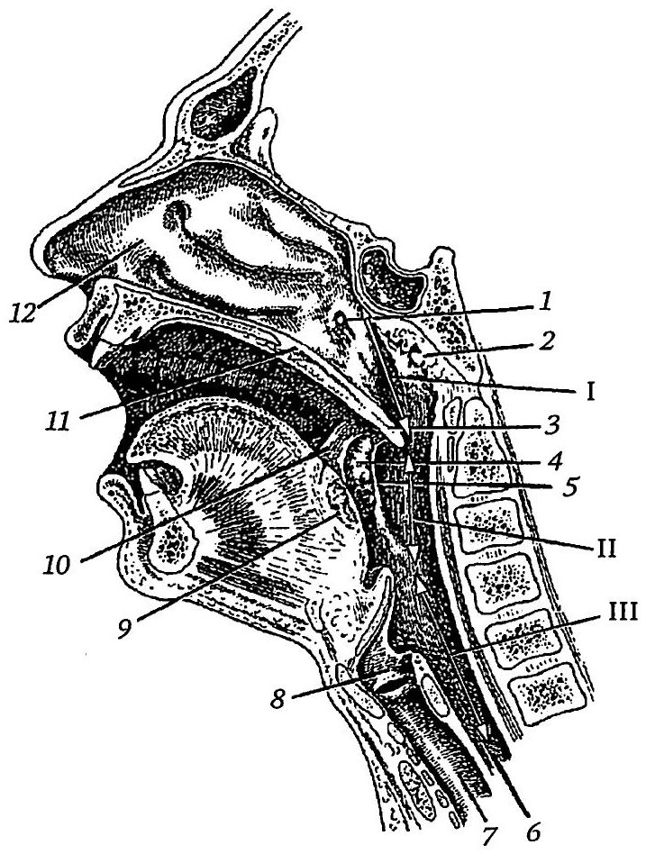
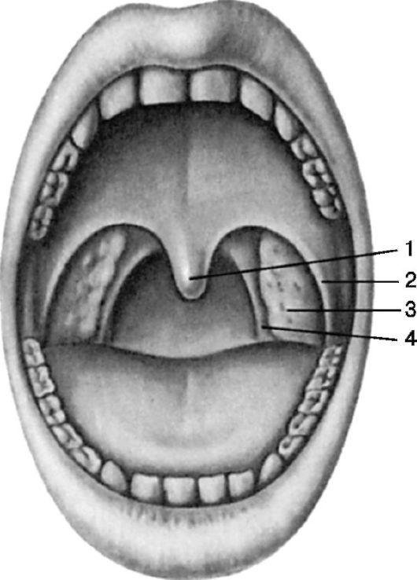
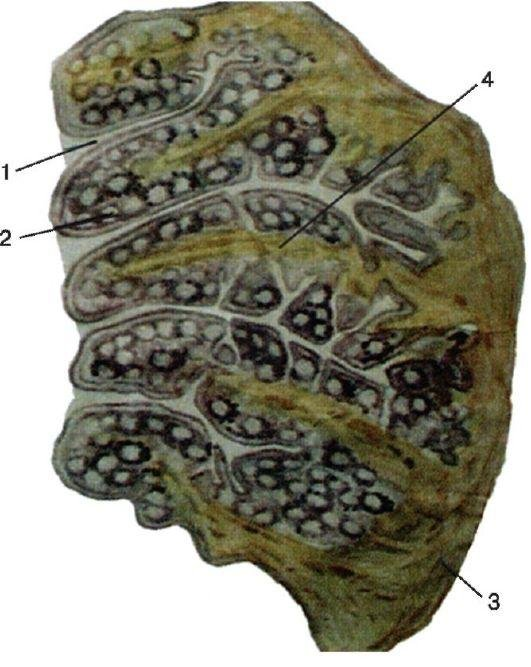
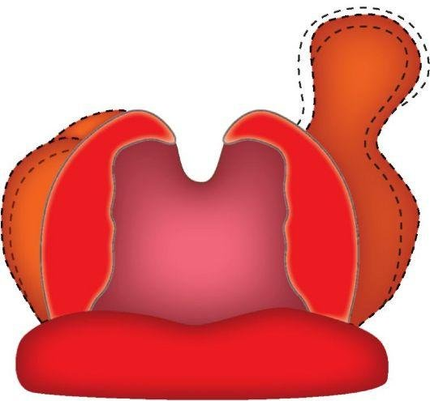
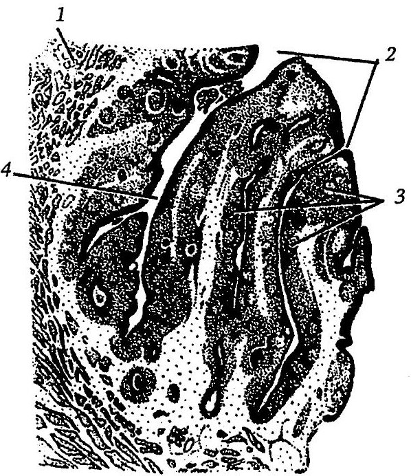
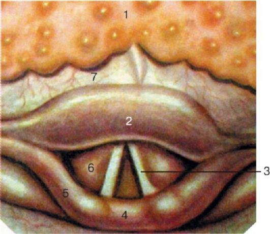
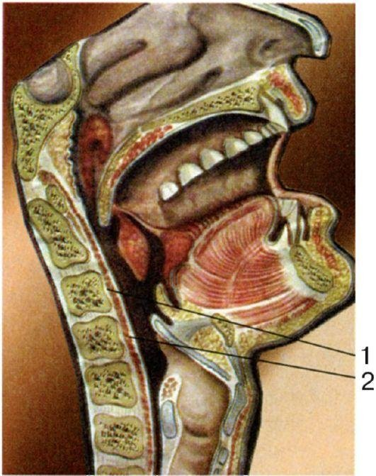
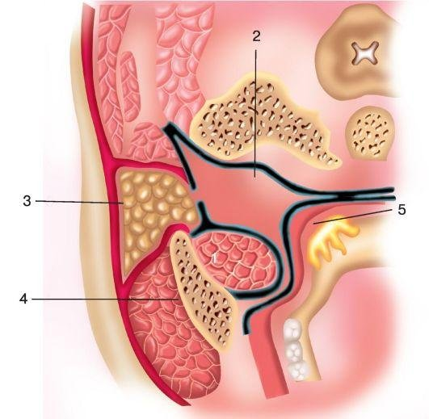
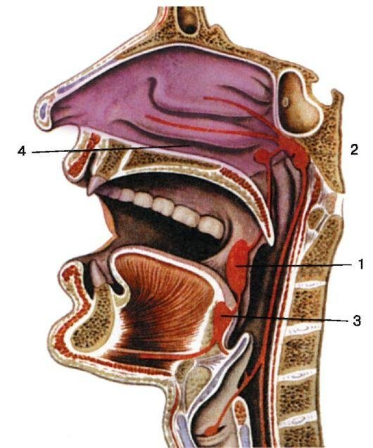

Анатомия и физиология глотки
Общие сведения и отделы глотки
Глотка (pharynx) представляет собой начальную часть пищеварительной трубки, расположенной между полостью рта и пищеводом. В то же время глотка является частью дыхательной трубки, по которой воздух проходит из полости носа в гортань. Глотка простирается от основания черепа до уровня VI шейного позвонка, где она, суживаясь, переходит в пищевод. Длина глотки у взрослого человека составляет 12–14 см и располагается кпереди от шейного отдела позвоночного столба. по: Пальчун, Магомедов, Лучихин, учебник, с. 229
В глотке можно выделить верхнюю, заднюю, переднюю и боковые стенки:
- верхняя стенка глотки — свод (fornix pharyngis) — прикрепляется к наружной поверхности основания черепа в области базилярной части затылочной кости и тела клиновидной кости;
- задняя стенка глотки прилегает к предпозвоночной пластинке (lamina prevertebralis) шейной фасции и соответствует телам пяти верхних шейных позвонков;
- боковые стенки глотки находятся вблизи с внутренней и наружной сонными артериями, внутренней яремной веной, блуждающим, подъязычным, языкоглоточным нервами, симпатическим стволом, большими рогами подъязычной кости и пластинками щитовидного хряща;
- передняя стенка глотки в верхнем отделе в области носоглотки посредством хоан сообщается с полостью носа, в среднем отделе сообщается с полостью рта.
по: Пальчун, Магомедов, Лучихин, учебник, с. 229–230
В полости глотки различают три отдела:
- верхний — носовая часть, или носоглотка (pars nasalis, epipharynx);
- средний — ротовая часть, или ротоглотка (pars oralis, mesopharynx);
- нижний — гортанная часть, или гортаноглотка (pars laryngea, hypopharynx).
по: Пальчун, Магомедов, Лучихин, учебник, с. 230
Глотка имеет форму сплющенной в переднезаднем направлении воронкообразной трубки, фиксированной к основанию черепа. Линия прикрепления к основанию черепа проходит по следующим образованиям: сзади — глоточный бугорок и базилярная часть затылочной кости, далее она пересекает затылочно-каменистый синхондроз и продолжается по нижней поверхности пирамиды височной кости (кпереди от наружной апертуры сонного канала), затем направляется вперёд и медиально вдоль каменисто-клиновидного синхондроза к медиальной пластинке крыловидного отростка клиновидной кости и опускается по её заднему краю до фиброзной полоски — крылонижнечелюстного шва (находится между крючком крыловидного отростка и нижней челюстью) и по ветви нижней челюсти достигает её linea mylohyoidea. На уровне VI–VII шейных позвонков глотка переходит в пищевод.
Таблица 1. Размеры глотки взрослого человека (по данным Гайворонского и соавт., табл. 4, с. 53)
| Отдел | Длина, см | Диаметр, см | Площадь поверхности, см² |
|---|---|---|---|
| Глотка в целом | 15 у мужчин, 13 у женщин | — | 300 |
| Носоглотка | 3 | 2 × 4 | 100 |
| Ротоглотка | 5 | 4 × 5 | 120 |
| Гортаноглотка | 7 | 3–2 × 2 | 80 |
Таблица 2. Размеры глотки новорождённого и ребёнка 5 лет, мм (по данным Гайворонского и соавт., табл. 5, с. 53)
| Размер | Новорождённый | Ребёнок 5 лет |
|---|---|---|
| Длина всей глотки | 40 | 70 |
| Длина носоглотки | 13 | 20 |
| Поперечный размер носоглотки | 20 | 30 |
Передняя стенка почти отсутствует, так как в своей верхней и средней частях глотка сообщается с соседними полостями посредством хоан, зева и входа в гортань. Она имеется только в нижней части (гортаноглотка). Её образуют черпаловидные и перстневидный хрящи, покрытые мышцами и слизистой оболочкой. по: Гайворонский и соавт., с. 52–54

Глотка (pharynx) входит в начальный отдел пищеварительного тракта и дыхательных путей и представляет собой полый орган, образованный мышцами, фасциями и выстланный изнутри слизистой оболочкой (рис. 2.1). Она соединяет полости носа и рта с гортанью и пищеводом, посредством слуховых труб глотка сообщается со средним ухом. Полость глотки вертикально проецируется на основание затылочной и клиновидной костей, горизонтально — на тела шести шейных позвонков. В глотке различают три отдела: верхний — носоглотку, средний — ротоглотку и нижний — гортаноглотку. по: Пальчун, учебник для колледжей, с. 27
![Рис. 2.1. Глотка сзади после вскрытия ее задней стенки по средней линии; задняя и боковые стенки глотки отворочены, а на уровне свода сделан горизонтальный разрез боковых стенок: 1 — хоана; 2 — носовая перегородка; 3 — трубный валик; 4 — трубно-глоточная складка; 5 — передняя нёбная дужка; 6 — нёбная миндалина; 7 — надгортанник; 8 — грушевидная ямка; 9 — пищевод; 10 — щитовидная железа; 11 — черпаловидный хрящ; 12 — вход в гортань; 13 — черпалонадгортанная складка; 14 — корень языка; 15 — язычок; 16 — мягкое нёбо](img/tb-pc-2-1.jpg)
Сведения учебника о трех отделах глотки, изложенные ниже по разделам, сведены в таблицу: для каждого отдела указаны его границы, уровень шейных позвонков, эпителий слизистой оболочки, лимфаденоидные образования и функция.
Таблица 3. Отделы глотки (составлено по: Пальчун, учебник для колледжей, с. 27–31)
| Отдел | Границы | Уровень позвонков | Эпителий | Миндалины | Функция |
|---|---|---|---|---|---|
| Носоглотка (nasopharynx, epipharynx) | Вверху — свод, фиксированный к основанию черепа; впереди — хоаны; снизу — мысленно продленная кзади плоскость твердого нёба | I и II шейные позвонки | Многорядный мерцательный (возле хоан) | Глоточная (III), трубные (V и VI) | Дыхательная; стенки не спадаются и неподвижны |
| Ротоглотка (mesopharynx) | Спереди — зев; сверху — плоскость твердого нёба; снизу — верхний край надгортанника и корень языка | III шейный позвонок | Многослойный плоский | Нёбные (I и II), язычная (IV) | Проведение воздуха и пищи; перекрест дыхательного и пищеварительного путей |
| Гортаноглотка (hypopharynx) | Сверху — верхний край надгортанника и корень языка; книзу воронкообразно суживается и переходит в пищевод | IV, V и VI шейные позвонки | Многослойный плоский | Мелкие скопления у входа в гортань и в грушевидных синусах | Проведение пищевого комка по грушевидным ямкам ко входу в пищевод |
Носоглотка
Носоглотка (nasopharynx, epipharynx) располагается от свода глотки до уровня твёрдого нёба. Переднезадний её размер нередко уменьшен за счёт выступа I шейного позвонка (атланта). Её передняя стенка занята хоанами (choanae), сообщающими её с полостью носа. На боковой стенке с каждой стороны на уровне задних концов нижних носовых раковин находятся воронкообразной формы глоточные отверстия слуховой трубы, сообщающие глотку с барабанной полостью. Сверху и сзади эти отверстия ограничены трубными валиками, образованными выступающими хрящевыми стенками слуховых труб.
Кзади от трубных валиков и устья слуховой трубы на боковой стенке носоглотки имеется углубление — глоточный карман (fossa Rosenmulleri), в котором имеется скопление лимфаденоидной ткани. Эти лимфаденоидные образования носят название трубных миндалин. На задневерхней стенке носоглотки находится III, или глоточная (носоглоточная), миндалина. Гипертрофия этой миндалины (аденоидные разрастания) может частично или полностью прикрыть хоаны, вызывая затруднение носового дыхания, или устья слуховых труб, нарушая их функцию. Глоточная миндалина хорошо развита только в детском возрасте; с возрастом, после 14 лет, она атрофируется. Границей между верхней и средней частями глотки является мысленно продлённая кзади плоскость твёрдого нёба. по: Пальчун, Магомедов, Лучихин, учебник, с. 230–231
Носоглотка посредством хоан сообщается с полостью носа и выполняет исключительно дыхательную функцию. Верхняя стенка носоглотки, или свод глотки, граничит с клиновидной частью затылочной кости, задняя стенка — с I и II шейными позвонками. Следует обратить внимание, что у новорождённых и детей первых лет жизни между носоглоткой и ротоглоткой заметного перехода нет, так как свод глотки переходит в заднюю стенку постепенно, образуя плавно изогнутую поверхность. К 5 годам между сводом глотки и задней стенкой формируется непрямой угол, и к достижению зрелости они соединяются почти под прямым углом. Указанные возрастные особенности следует учитывать при аденотомии.
Глоточная миндалина, tonsilla pharyngealis (аденоида, adenoida), хорошо развита у детей, а у взрослых слабо выделяется на внутренней поверхности задней стенки. Глоточная миндалина состоит из лимфоидной ткани толщиной 2 мм, покрытой тонкой соединительнотканной капсулой и эпителием слизистой оболочки. Инволюция глоточных миндалин начинается на 6–7-м году жизни и заканчивается при достижении половой зрелости. Однако этот орган иногда сохраняется и у взрослых. по: Гайворонский и соавт., с. 54–55
Таблица 4. Размеры глоточной миндалины в разном возрасте, мм (по данным Гайворонского и соавт., табл. 6, с. 55)
| Возраст | Длина | Ширина | Толщина |
|---|---|---|---|
| 1–3 года | 13–15 | 8–9 | 5 |
| 3–5 лет | 16–17 | 10–11 | 7 |
| 5–10 лет | 29 | 14 | 7 |
| Взрослые | 25 | 15 | 10 |
Глоточная миндалина состоит из 5–9 продолговатых валикообразных складок, разделённых бороздами, которые являются своеобразными криптами. по: Заболотный и соавт., с. 90
Отверстие слуховой трубы сверху и сзади окружено трубным валиком, torus tubarius, который незначительно выдаётся в просвет носоглотки. Спереди оно ограничено едва заметным узким тяжем слизистой оболочки, который снизу сливается с мягким нёбом, — трубно-нёбная складка, plica salpingopalatina. Сзади его ограничивает трубно-глоточная складка, plica salpingopharyngea. У глоточного отверстия слуховой трубы в толще слизистой оболочки находится скопление лимфоидной ткани, которое называют трубной миндалиной, tonsilla tubaria. Она хорошо выражена у новорождённого, её размеры составляют 8 мм в длину и 3 мм в ширину. Наибольшего развития трубная миндалина достигает в 5–7 лет, в дальнейшем она постепенно атрофируется и становится почти незаметной. по: Гайворонский и соавт., с. 55–57
Носоглотка (nasopharynx или epipharynx) выполняет дыхательную функцию, стенки ее не спадаются и неподвижны. Вверху свод носоглотки фиксирован к основанию черепа и граничит с основанием затылочной кости и передненижним отделом клиновидной кости, сзади — с I и II шейными позвонками, впереди находятся две хоаны, на боковых стенках на уровне задних концов нижних носовых раковин располагаются воронкообразные глоточные отверстия слуховых труб. Кзади от устья слуховой трубы есть углубление — глоточный карман со скоплением лимфаденоидной ткани — трубная миндалина (V и VI миндалины глотки). На границе между верхней и задней стенками носоглотки находится глоточная (III, или носоглоточная) миндалина. Глоточная миндалина в норме хорошо развита в детском возрасте. Границей между верхней и средней частями глотки служит мысленно продленная кзади плоскость твердого нёба. по: Пальчун, учебник для колледжей, с. 27–28
Ротоглотка и мягкое нёбо
Ротоглотка (oropharynx, mesopharynx) простирается от уровня твёрдого нёба до уровня входа в гортань. Задняя стенка этого отдела соответствует телу III шейного позвонка. Спереди ротоглотка посредством зева сообщается с полостью рта. Зев (fauces) ограничивается сверху мягким нёбом, снизу — корнем языка и с боков нёбно-язычными (передними) и нёбно-глоточными (задними) дужками.
Мягкое нёбо (palatum molle) — продолжение твёрдого нёба, представляет собой подвижную пластинку, которая в спокойном состоянии свешивается вниз к основанию языка. Мягкое нёбо образовано в основном мышцами и апоневрозом сухожильных пучков. Задняя часть мягкого нёба, направляющаяся косо назад и вниз, вместе с корнем языка ограничивает отверстие зева (isthmus faucium). Удлинённый в виде отростка по средней линии свободный конец мягкого нёба носит название язычка (uvula). С каждой стороны нёбная занавеска переходит в две дужки. Одна (передняя) направляется к корню языка — нёбно-язычная (arcus palatoglossus), другая (задняя) переходит в слизистую оболочку боковой стенки глотки — нёбно-глоточная (arcus palatopharyngeus). От задней поверхности нёбно-язычной дужки отходит выраженная в различной степени тонкая треугольная складка слизистой оболочки (plica triangularis), или складка Гиса. по: Пальчун, Магомедов, Лучихин, учебник, с. 231–232
Под покровом слизистой оболочки мягкое нёбо содержит апоневротическую пластинку, а также ряд мышц, играющих важную роль в акте глотания:
- мышца, натягивающая мягкое нёбо (m. tensor veli palatini), растягивает передний отдел мягкого нёба и глоточный отдел слуховой трубы;
- мышца, поднимающая нёбную занавеску (m. levator veli palatini), поднимает мягкое нёбо, суживает просвет глоточного отверстия слуховой трубы;
- нёбно-язычная мышца (m. palatoglossus) находится в нёбно-язычной дужке, прикрепляется к боковой поверхности языка и при напряжении суживает зев, сближая передние дужки с корнем языка;
- нёбно-глоточная мышца (m. palatopharyngeus) находится в нёбно-глоточной дужке, прикрепляется к боковой стенке глотки, при напряжении сближает нёбно-глоточные дужки и подтягивает вверх нижнюю часть глотки и гортань.
по: Пальчун, Магомедов, Лучихин, учебник, с. 232
Между нёбными дужками с каждой стороны глотки имеется углубление треугольной формы — тонзиллярная ниша (миндаликовая ямка, или бухта, fossa tonsillaris), дно которой образовано верхним сжимателем глотки и глоточной фасцией. В тонзиллярных нишах расположены самые крупные скопления лимфоидной ткани — I и II, или нёбные, миндалины (tonsillae palatinae). по: Пальчун, Магомедов, Лучихин, учебник, с. 232

Во время прохождения пищи и при произнесении некоторых звуков нёбная занавеска тесно прилегает к задней стенке глотки, отделяя носоглотку от ротоглотки. Разобщению этих двух частей полости глотки, кроме мышц мягкого нёба, также способствует сокращение циркулярных мышц задней стенки глотки (констрикторов), образующих так называемый валик Пассавана. При парезах и параличах мягкого нёба жидкая пища затекает в полость носа. При этом также развивается открытая гнусавость. по: Гайворонский и соавт., с. 58
Нёбные миндалины
Различают зевную (внутреннюю) и боковую (наружную) поверхности нёбных миндалин, верхний и нижний её полюса. Зевная поверхность обращена в полость глотки и содержит 16–18 глубоких, извилистых каналов, называемых криптами, которые пронизывают толщу миндалины и имеют ответвления первого, второго, третьего и даже четвёртого порядка. Наружные (зевные) отверстия крипт выглядят в виде углублений — лакун, в которых иногда скапливается небольшое эпидермальное содержимое. Покровный эпителий стенок крипт миндалин на большом протяжении контактирует с лимфоидной тканью. Крипты более развиты в области верхнего полюса миндалин, просвет их содержит слущенный эпителий, лимфоциты, лейкоциты, бактерии, пищевые остатки.
Боковая поверхность нёбных миндалин покрыта плотной фиброзной соединительнотканной оболочкой, называемой псевдокапсулой (ложная капсула), толщина которой достигает 1 мм. Она образована пересечением пластинок шейной фасции. От псевдокапсулы в толщу миндалин отходят соединительнотканные волокна — трабекулы. Трабекулы ветвятся и образуют в паренхиме миндалины густопетлистую сеть, в которой находится масса лимфоцитов, окружающих шаровидные скопления разной степени зрелости лимфоцитов, называемые фолликулами. Кроме того, имеются и другие клетки — тучные, плазматические. Между боковой стенкой глотки и псевдокапсулой миндалины располагается паратонзиллярная клетчатка, более развитая в верхнем полюсе нёбной миндалины. Псевдокапсула отсутствует в нижнем полюсе и на зевной поверхности миндалины.

В области верхнего полюса миндалины иногда имеется углубление треугольной формы, в котором располагаются лимфоидные образования, — синус Туртюаля, который может продолжаться в виде добавочной доли миндалины в мягкое нёбо. Большая глубина и извилистость лакун в верхнем полюсе часто способствуют возникновению воспалительного процесса и очагов латентной гнойной инфекции. На расстоянии около 2,8 см от верхнего полюса миндалины располагается внутренняя сонная артерия, а наружная сонная отстоит примерно на 4,1 см.

Нижний полюс миндалины свисает над корнем языка, плотно спаян с боковой стенкой и сравнительно трудно отсепаровывается при тонзиллэктомии. От нижнего полюса миндалины на расстоянии 1,1–1,7 см находится внутренняя сонная артерия, а наружная сонная располагается на расстоянии 2,3–3,3 см.
Важным с точки зрения патологии фактором является то, что опорожнение глубоких и древовидно разветвлённых крипт легко нарушается из-за их узости, глубины и разветвлённости, а также из-за рубцовых сужений устий крипт (лакун), часть которых в передненижнем отделе нёбной миндалины прикрыта складкой слизистой оболочки — складкой Гиса. Эти анатомо-топографические особенности нёбных миндалин наряду с расположением нёбных миндалин в области перекрёста пищеводного и дыхательного путей создают благоприятные условия для возникновения в этих миндалинах хронического воспаления. Следует отметить, что анатомическая структура крипт, кроме нёбных миндалин, больше нигде не представлена. по: Пальчун, Магомедов, Лучихин, учебник, с. 233–236
Нёбные миндалины иногда называют зевными или просто миндалинами. Каждая из них состоит из лимфоидных узелков, или фолликулов, окружённых соединительной тканью — фиброзной, или миндаликовой, капсулой, capsula tonsillaris. Узелки имеют диаметр 1–2 мм и содержат в основном лимфоидную ткань. Она может располагаться не только в виде узелков, но и диффузно. Медиальная поверхность нёбной миндалины покрыта эпителием слизистой оболочки и обращена в полость рта. Эта поверхность неровная и содержит 10–20 углублений — миндаликовых крипт, cryptae tonsillares, которые вдаются внутрь миндалины на 5–7 мм. Крипты увеличивают площадь свободной поверхности нёбной миндалины до 300 см². Структурно-функциональной единицей миндалины является криптолимфон — это крипта, окружающие её лимфоидные узелки и отграничивающая их тонкая соединительнотканная капсула. При глотании нёбные миндалины несколько сдавливаются и сближаются друг с другом, при этом крипты освобождаются от содержимого.

Латеральная поверхность нёбной миндалины прилежит к боковой стенке глотки, отделяясь от неё фиброзной капсулой. Толщина капсулы достигает 1 мм. Кнаружи от капсулы находится слой рыхлой паратонзиллярной клетчатки, которая спускается вниз до корня языка, спереди сообщается с клетчаткой нёбно-язычной дужки и вверху — с подслизистой основой мягкого нёба. При тонзиллэктомии (удалении миндалин) нёбную миндалину необходимо отделять от стенки глотки вместе с фиброзной капсулой. Следует обратить внимание, что на расстоянии 1–1,5 см кзади от нёбной миндалины проходит внутренняя сонная артерия. Расстояние от верхнего полюса нёбной миндалины до внутренней сонной артерии составляет 28 мм, от нижнего полюса — 11–17 мм, до наружной сонной артерии соответственно 41 мм и 23–39 мм.
Таблица 5. Размеры, масса и объём нёбной миндалины в разном возрасте (по данным Гайворонского и соавт., табл. 7, с. 60)
| Возраст | Длина, мм | Ширина, мм | Толщина, мм | Масса каждой, г | Объём каждой, см³ |
|---|---|---|---|---|---|
| Новорождённый — 1 год | 5 | 4 | 3 | 0,2 | 0,8 |
| 1–6 лет | 10 | 9 | 6 | 0,8 | 2,5 |
| 6–11 лет | 12 | 11 | 9 | 1,2 | 3,2 |
| 11–16 лет | 16 | 15 | 11 | 1,4 | 3,8 |
| Взрослые | 20–26 | 15–20 | 12 | 2,5 | 4,5 |
Масса и размеры нёбных миндалин подвержены значительным индивидуальным колебаниям. В верхней части пространства между передней и задней дужками находится надминдаликовая ямка, fossa supratonsillaris. Она имеет вид гладкой треугольной ямки или вдавления в мягком нёбе, заполненного добавочной нёбной долькой миндалины. Иногда данная долька глубоко заходит в мягкое нёбо, древовидно ветвится и не имеет непосредственной связи с основной нёбной миндалиной. В этих случаях она представляет собой добавочную внутринёбную миндалину, tonsilla intrapalatina accessoria, которая обычно содержит глубокую ветвистую крипту — синус Туртюаля, sinus Tourtuali, играющий немаловажную роль в патологии миндалин. по: Гайворонский и соавт., с. 58–60
Паренхима миндалины представлена рыхлой аденоидной, или ретикулярной, тканью, состоящей из звёздчатых ретикулярных клеток, их отростков и аргирофильных ретикулярных волокон. В петлях этой сетки содержатся лимфоциты и их скопления (фолликулы), плазматические клетки и макрофаги. Фолликулы размещаются однослойными рядами. Среди них обнаруживаются небольшие, равномерно окрашенные фолликулы и большие, так называемые вторичные, фолликулы, на периферии которых различается тёмная краевая зона, а в центре — светлая (зачаточный, или реактивный, центр). Внутренняя поверхность миндалины, обращённая к зеву, покрыта многослойным плоским эпителием. На этой поверхности имеется от 12 до 20 тонзиллярных ямок, ведущих к лакунам, или криптам, которые имеют извилистый ход, нередко разветвляются и могут достигать капсулы миндалины. Поверхность двух нёбных миндалин благодаря наличию крипт достигает 300 см². Часть передней поверхности нёбной миндалины зачастую покрыта треугольной складкой.
Доказано, что миндалины имеют сложный нервный аппарат с афферентными и эфферентными волокнами с разнообразными нервными окончаниями. В нёбных и язычных миндалинах выявлены нервные клетки и нервные узлы. Сквозь капсулу нёбной миндалины в неё проникает около 360 нервных веточек от языкоглоточного, блуждающего нервов и симпатических волокон. по: Заболотный и соавт., с. 89–90
Наружная поверхность миндалин соединена с боковой стенкой глотки посредством плотной фиброзной оболочки, называемой в клинической практике капсулой миндалины, которая является частью медиальной стенки парафарингеального пространства. От этой капсулы в паренхиму миндалины проходит множество соединительнотканных волокон, которые соединяются между собой перекладинами (трабекулами), образуя густопетлистую сеть. Ячейки этой сети заполнены массой лимфоцитов, местами сформированных в шаровидные фолликулы; здесь встречаются и другие клетки — тучные, плазматические и др. Лакуны пронизывают толщу миндалины, имеют ответвления первого, второго, третьего и даже четвертого порядка. Стенки лакун, как и зевная поверхность миндалины, выстланы плоским эпителием, который во многих местах отторгается. В просвете лакун наряду с отторгнувшимся эпителием, составляющим основу так называемых миндаликовых пробок, всегда содержатся микрофлора, лимфоциты, нейтрофилы и др. Важный с точки зрения патологии фактор заключается в том, что опорожнение глубоких и древовидно разветвленных лакун легко нарушается из-за их узости, глубины и разветвленности. по: Пальчун, учебник для колледжей, с. 30
Гортаноглотка
Гортаноглотка (laryngopharynx, hypopharynx) начинается на уровне верхнего края надгортанника и корня языка, суживается книзу в виде воронки и переходит в пищевод. Гортаноглотка лежит кзади от гортани и кпереди от IV, V и VI шейных позвонков. Это самая узкая часть глотки. В начальном отделе гортаноглотки на корне языка расположена IV, или язычная, миндалина (tonsilla lingualis).

Ниже прикрепления надгортанника гортаноглотка переходит в гортань. По бокам от входа в гортань, между стенкой гортани и боковыми стенками глотки, сверху вниз справа и слева идут конусовидные сужения глотки, которые называются грушевидными карманами (recessus piriformis), — по ним пища направляется в пищевод. Спереди вход в гортань ограничен надгортанником, с боков — черпалонадгортанными складками. по: Пальчун, Магомедов, Лучихин, учебник, с. 236–237
На медиальной стенке грушевидного кармана имеется дупликатура слизистой оболочки — складка верхнего гортанного нерва, plica n. laryngei superioris, в толще которой проходит одноимённый нерв. Эта складка разделяет грушевидный карман на две части — верхнюю (меньшую) и нижнюю (большую). В гортаноглотке у входа в гортань и в слизистой оболочке грушевидных карманов имеется лимфоидная ткань в виде отдельных узелков.
Передняя стенка гортаноглотки вверху дополняется корнем языка. В его слизистой оболочке располагается язычная миндалина, tonsilla lingualis. Это нечётко очерченная структура, состоящая из 30–100 лимфоидных узелков, вытянутых в ряды и покрытых фиброзной капсулой. У детей язычная миндалина простирается по всему корню языка и имеет толщину до 3 мм. У взрослых она занимает лишь небольшой участок корня языка, так как большая часть узелков редуцируется. Следует отметить, что крипты язычной миндалины неглубокие, на дне многих из них открываются протоки слюнных желёз, секрет которых способствует очищению крипт. по: Гайворонский и соавт., с. 61
Язычная миндалина, размещённая под многослойным плоским эпителием корня языка, представляет собой совокупность бугорков, количество которых колеблется в пределах от 24 до 102. На вершине каждого бугорка имеется отверстие, куда открывается крипта глубиной 3–4 мм. На дне крипты открывается один или несколько выводных протоков слизистых желёз. Трубные миндалины небольшие. Они содержат лимфоидную ткань, фолликулы встречаются редко. Глоточные и трубные миндалины покрыты многорядным цилиндрическим эпителием.
Между корнем языка и язычной поверхностью надгортанника есть углубление, разделённое на два синуса средней складкой, идущей от надгортанника к корню языка. Эти ямки называются валлекулами. В грушевидных ямках и валлекулах могут застревать инородные тела. В случае подозрения на возможное наличие инородных тел в горле эти анатомические образования следует внимательно осмотреть. При нарушении проходимости пищевода, в частности при наличии инородных тел, в грушевидных синусах определяется слюностаз. по: Заболотный и соавт., с. 88, 90
Стенка глотки
Стенка глотки образована четырьмя оболочками:
- фиброзной (tunica fibrosa);
- соединительнотканной (tunica adventitia);
- мышечной (tunica muscularis);
- слизистой (tunica mucosa).
по: Пальчун, Магомедов, Лучихин, учебник, с. 237
Между мышечной и слизистой оболочками находится подслизистый слой, характеризующийся наличием в нём фиброзной ткани, поэтому этот слой получил название фиброзной оболочки. Снаружи мышцы, в свою очередь, покрыты более тонким соединительнотканным слоем — адвентицией, на которой лежит рыхлая соединительная ткань, допускающая подвижность глотки по отношению к окружающим анатомическим образованиям.
Слизистая оболочка глотки является продолжением слизистой оболочки полости носа и рта и внизу переходит в слизистую оболочку гортани и пищевода. В верхней части глотки возле хоан слизистая оболочка покрыта многорядным мерцательным эпителием, в средней и нижней частях — плоским многорядным эпителием. В слизистой оболочке глотки содержится много слизистых желёз, а на задней стенке имеются мелкие скопления лимфоидной ткани в виде бугорков на слизистой оболочке размером 1–2 мм — лимфоидные гранулы. Слизистая оболочка здесь плотно сращена с мышечной оболочкой и не образует складок. по: Пальчун, Магомедов, Лучихин, учебник, с. 237
В носоглотке подслизистая основа заменяется плотной соединительнотканной пластинкой, которая называется фиброзной оболочкой, tunica fibrosa. Эта часть фиброзной оболочки носит название глоточно-базилярной фасции, fascia pharyngobasilaris. С помощью указанной фасции глотка прикрепляется к основанию черепа. Книзу она продолжается в тонкую эластическую перепонку, прикрепляющуюся к подъязычной кости и к щитовидному хрящу гортани. Наличие двух видов эпителия на протяжении глотки функционально обусловлено. Мерцательный эпителий обеспечивает удаление из носоглотки мельчайших пылевых частиц, а многослойный плоский эпителий обеспечивает скольжение пищевого комка. Кроме того, скольжению пищевого комка способствует секрет многочисленных слизистых желёз.
В слизистой оболочке глотки содержится лимфоидная ткань в виде отдельных узелков на задней стенке и в виде лимфоидных скоплений на боковых стенках позади нёбно-глоточных дужек. Лимфоидные узелки, увеличиваясь при воспалении или гиперплазии, имеют вид красных зёрен или гранул на задней стенке глотки, а лимфоидные скопления позади нёбно-глоточных дужек при воспалении образуют валики красного цвета. по: Гайворонский и соавт., с. 60, 62
Мышечный слой глотки состоит из поперечнополосатых волокон и представлен циркулярными и продольными мышцами, сжимающими и поднимающими глотку. Сжимают глотку три констриктора: верхний, средний и нижний. Эти мышцы расположены сверху вниз в виде пластинок, черепицеобразно прикрывающих друг друга:
- верхний сжиматель глотки (m. constrictor pharyngis superior) имеет форму четырёхугольной пластинки, начинается спереди от клиновидной кости и нижней челюсти; мышечные пучки идут горизонтально по боковой стенке глотки на заднюю и соединяются с пучками мышц противоположной стороны, образуя верхнюю часть срединного шва глотки;
- средний сжиматель глотки (m. constrictor pharyngis medius) начинается от рогов подъязычной кости, идёт кзади веерообразно ко шву глотки, частично прикрывая верхний сжиматель, а внизу находится под нижним сжимателем;
- нижний сжиматель глотки (m. constrictor pharyngis inferior) начинается от наружной поверхности перстневидного хряща, от нижнего рога и заднего края щитовидного хряща, идёт кзади и по средней линии глотки формирует своим прикреплением глоточный шов.
по: Пальчун, Магомедов, Лучихин, учебник, с. 237–238
Продольные мышцы поднимают глотку. К ним относятся две мышцы: шилоглоточная (m. stylopharyngeus) и нёбно-глоточная (m. pharyngopalatinus). по: Пальчун, Магомедов, Лучихин, учебник, с. 238
Нижний констриктор глотки начинается от наружной поверхности перстневидного хряща — перстнеглоточная часть, pars cricopharyngea, от нижнего рога и заднего края щитовидного хряща — щитоглоточная часть, pars thyropharyngea; его волокна также веерообразно расходятся. Нижние волокна, немного опускаясь, окружают начало пищевода, верхние идут в восходящем направлении и покрывают снаружи средний и частично верхний констрикторы. Мышцы, поднимающие глотку, — продольные, поперечнополосатые. Основная из них — шилоглоточная мышца, m. stylopharyngeus, начинается от шиловидного отростка височной кости. Её волокна заканчиваются между волокнами верхнего и среднего констрикторов. Часть пучков прикрепляется к верхнему краю щитовидного хряща гортани. Нёбно-глоточная мышца, m. palatopharyngeus, лежит в толще одноимённой дужки. Трубно-глоточная мышца, m. salpingopharyngeus, расположена в одноимённой складке. по: Гайворонский и соавт., с. 64–65
Мышцы, поднимающие глотку, выражены слабее, чем сужающие. Слой мышц глотки снаружи покрыт тонкой соединительнотканной оболочкой — адвентицией, которая с помощью соединительнотканной клетчатки соединена с прилегающими анатомическими образованиями, что обеспечивает значительную подвижность глотки. по: Заболотный и соавт., с. 87
Окологлоточные пространства
Боковые и задняя стенки глотки граничат с окологлоточным пространством (spatium parapharyngeum), в котором различают заглоточное пространство и боковое окологлоточное пространство.
Заглоточное пространство (spatium retropharyngeum) расположено кпереди от шейных позвонков, покрывающих их мышц и предпозвоночной пластинки шейной фасции; оно представляет собой узкую щель, которая заполнена рыхлой соединительной тканью. Это пространство сзади ограничено предпозвоночной пластинкой шейной фасции (lamina praevertebralis), спереди — соединительнотканным покровом и слизистой оболочкой, а с боков — фасцией и клетчаткой, окружающей область больших сосудов и нервов шеи. Клетчатка заглоточного пространства, начинаясь от основания черепа и спускаясь вниз по задней стенке глотки, переходит в позадипищеводную клетчатку и далее — в заднее средостение. по: Пальчун, Магомедов, Лучихин, учебник, с. 238–239

Заглоточное пространство начинается узкой щелью от основания черепа и постепенно расширяется книзу, до уровня VI шейного позвонка, где переходит в околопищеводную клетчатку и дальше — в клетчатку заднего средостения. Срединной, сагиттально размещённой перегородкой заглоточное пространство на уровне носовой части глотки разделено на две симметричные половины. С обеих сторон срединной перегородки в раннем детском возрасте размещены лимфоузлы, куда проникает инфекция при воспалительных процессах в задних отделах носа и глотки. В результате этого воспаление переходит на клетчатку и развиваются заглоточные абсцессы. Если заглоточный абсцесс развивается в носовой части глотки, он является латеральным (ближе к какой-нибудь стороне). Опускаясь в ротовую часть глотки, он занимает срединное положение. по: Заболотный и соавт., с. 86–87
Боковое окологлоточное пространство (spatium lateropharyngeum) выполнено рыхлой соединительной тканью, спереди ограничено внутренней поверхностью ветви нижней челюсти, с внутренней стороны — медиальной крыловидной мышцей, сзади — предпозвоночной пластинкой шейной фасции, латерально — глубоким листком фасции околоушной слюнной железы. Боковое окологлоточное пространство делится шилоглоточной мышцей на передний и задний отделы. Боковое окологлоточное пространство простирается от основания черепа вниз, где переходит в средостение. по: Пальчун, Магомедов, Лучихин, учебник, с. 239

В этом пространстве содержатся мышцы анатомического букета (шилоглоточная, шилоподъязычная, шилоязычная), сосуды, нервы, жировая и соединительнотканная клетчатка. Посредством шилоглоточной мышцы оно делится на передний и задний отделы. Передний отдел в клиническом отношении более важен, так как в него распространяются воспалительные процессы из глотки.
Вдоль бокового глоточного пространства проходят блуждающий, языкоглоточный, добавочный и подъязычный нервы, внутренняя сонная артерия и внутренняя яремная вена. В клиническом отношении боковое глоточное пространство имеет важное значение, так как в него возможно распространение гнойников из паратонзиллярной клетчатки при паратонзиллярном абсцессе или ранении стенки глотки. Поскольку данное пространство сообщается с задним средостением, то при возникновении нагноения в боковом пространстве шеи они могут привести к гнойному медиастиниту, расплавлению стенок крупных сосудов и смертельному кровотечению.
Между задней поверхностью глотки (париетальной пластинкой внутришейной фасции и предпозвоночной пластинкой собственной фасции шеи) находится заглоточное пространство, spatium retropharyngeum, заполненное рыхлой соединительнотканной клетчаткой. В последней находятся заглоточные лимфатические узлы. Следует отметить, что заглоточное пространство отделяется от бокового глоточного пространства лишь тонкой соединительнотканной перегородкой внутришейной фасции. Оно также сообщается с задним средостением. по: Гайворонский и соавт., с. 65–66
Кровоснабжение, лимфоотток и иннервация
Кровоснабжение глотки осуществляется из системы наружной сонной артерии и щитошейного ствола:
- восходящая глоточная артерия (a. pharyngea ascendens) — медиальная ветвь наружной сонной артерии, обеспечивает кровоснабжение верхнего и среднего отдела глотки;
- восходящая нёбная артерия (a. palatina ascendens) — ветвь лицевой артерии (a. facialis), которая также берёт начало от наружной сонной артерии;
- нисходящая нёбная артерия (a. palatina descendens) — ветвь верхнечелюстной артерии, являющейся конечной ветвью наружной сонной артерии;
- нижние отделы глотки обеспечиваются кровью за счёт глоточных ветвей нижней щитовидной артерии (a. thyreoidea inferior) — ветви щитошейного ствола.
по: Пальчун, Магомедов, Лучихин, учебник, с. 240–241
Нёбную миндалину снабжают кровью восходящая глоточная артерия (a. pharyngea ascendens), восходящая нёбная артерия (a. palatina ascendens) и миндаликовая ветвь лицевой артерии (r. tonsillaris a. facialis). Вены глотки образуют переднее и заднее глоточные сплетения (plexus pharyngeus anterior et posterior), располагающиеся в мягком нёбе и на наружной поверхности задней и боковой стенок глотки соответственно, кровь из них собирается во внутреннюю яремную вену (v. jugularis interna). по: Пальчун, Магомедов, Лучихин, учебник, с. 241
Васкуляризация нижней части глотки происходит за счёт глоточных ветвей, rr. pharyngeales, из верхней и нижней щитовидных артерий, aa. thyroideae superior et inferior. В связи с этим для остановки кровотечения из нижнего отдела глотки необходимо перевязывать ветви наружной сонной артерии и нижнюю щитовидную артерию.
Кровоснабжение миндалин лимфоэпителиального глоточного кольца, в том числе и нёбной миндалины, осуществляется миндаликовыми ветвями, rr. tonsillares, отходящими от лицевой артерии, a. facialis; одноимённые ветви могут отходить непосредственно от наружной сонной артерии или её ветвей: восходящей глоточной, a. pharyngea ascendens, восходящей и нисходящей нёбных артерий, aa. palatinae ascendens et descendens (соответственно от лицевой и верхнечелюстной артерий), а также от язычной артерии, a. lingualis. Отток крови от нёбной миндалины происходит по венам, сопровождающим артерии. Они впадают в глоточное венозное сплетение, plexus venosus pharyngealis, в лицевую и язычную вены, vv. facialis et lingualis, и крыловидное венозное сплетение, plexus venosus pterygoideus. по: Гайворонский и соавт., с. 67–69
Отток лимфы из глотки происходит в глубокие и задние шейные лимфатические узлы. Заглоточные лимфатические узлы разделяются на боковые и срединные, которые встречаются, как правило, только у детей. Лимфаденоидные образования глотки, в том числе все миндалины глотки, приводящих сосудов не имеют. по: Пальчун, Магомедов, Лучихин, учебник, с. 241
Отводящие лимфатические сосуды глотки и нёбных миндалин направляются к близлежащим заглоточным лимфатическим узлам, nodi lymphoidei retropharyngeales, а также к глубоким шейным лимфатическим узлам, nodi lymphoidei cervicales profundi. Последние располагаются по ходу внутренней яремной вены. Для носоглотки регионарными являются лимфатические узлы, лежащие на уровне верхней трети внутренней яремной вены, для ротоглотки — на уровне средней трети, для гортаноглотки — на уровне её нижней трети.
Собственные лимфатические капилляры и сосуды миндалины формируют поверхностную и глубокую сети. Поверхностная сеть располагается в подэпителиальном слое свободной поверхности миндалины. Глубокая сеть представлена в основном отводящими лимфатическими сосудами и находится вблизи капсулы миндалины. Отводящие лимфатические сосуды из глубокой сети впадают в околоушные, заглоточные, язычные, поднижнечелюстные лимфатические узлы. по: Гайворонский и соавт., с. 68–69
Верхнечелюстной нерв (вторая ветвь тройничного нерва), языкоглоточный нерв, добавочный нерв, блуждающий нерв и симпатический ствол участвуют в образовании глоточного нервного сплетения (plexus pharyngeus), которое расположено на задней и боковой стенках глотки. Это сплетение обеспечивает двигательную и чувствительную иннервацию глотки. Двигательной иннервацией верхний отдел глотки обеспечивается в основном за счёт языкоглоточного нерва (n. glossopharyngeus), средний и нижний отделы — возвратного гортанного нерва (n. laryngeus recurrens), ветви блуждающего нерва. Чувствительная иннервация верхнего отдела глотки осуществляется второй ветвью тройничного нерва, среднего — ветвями языкоглоточного нерва и нижнего — внутренней ветвью верхнегортанного нерва из системы блуждающего нерва. по: Пальчун, Магомедов, Лучихин, учебник, с. 241–242
Иннервация осуществляется ветвями языкоглоточного (IX пара черепных нервов) и блуждающего нервов (X пара), а также гортанно-глоточными ветвями, rr. laryngopharyngei, от верхнего шейного узла симпатического ствола, образующими на наружной поверхности среднего констриктора глотки глоточное сплетение, plexus pharyngealis. Эфферентная иннервация: шилоглоточная мышца иннервируется волокнами n. glossopharyngeus, остальные мышцы — двигательными волокнами n. vagus. Афферентная иннервация: верхняя часть глотки получает чувствительные (узловые) ветви верхнечелюстного нерва, средняя часть — преимущественно ветви языкоглоточного нерва, нижняя часть — преимущественно ветви блуждающего нерва. В составе языкоглоточного и блуждающего нервов также проходят и парасимпатические волокна. Гортанно-глоточные ветви обеспечивают симпатическую иннервацию.
Афферентная иннервация нёбной миндалины обеспечивается миндаликовой ветвью языкоглоточного нерва. Симпатическую иннервацию осуществляют rr. laryngopharyngei верхнего шейного узла симпатического ствола, парасимпатическую — преимущественно ветви верхнего гортанного нерва из блуждающего нерва, а также постганглионарные волокна крылонёбного узла лицевого нерва. В подэпителиальном слое, в соединительнотканных перегородках и паренхиме миндалин находятся отдельные нервные клетки, их скопления (ганглии), мякотные и безмякотные нервные волокна, различного вида нервные рецепторные окончания, образующие обширные рецепторные поля. по: Гайворонский и соавт., с. 68–69
Основное кровоснабжение глотки происходит из ветвей наружной сонной артерии. Отток лимфы из глотки происходит в глубокие и задние шейные лимфатические узлы. Лимфаденоидные образования глотки, в том числе и все миндалины глотки, не имеют приводящих лимфатических сосудов. На наружной и внутренней поверхности сжимателей глотки располагается ее нервное сплетение, образованное ветвями nn. glossopharyngeus, vagus et sympathicus. Это сплетение обеспечивает двигательную и чувствительную иннервацию глотки. по: Пальчун, учебник для колледжей, с. 32
Развитие глотки и особенности строения у детей
Глотка формируется из головной кишки в тесной связи с развитием ротовой и носовой полостей. От глоточной части ротовая ямка отграничивается эпителиальной мембраной (глоточная перепонка), которая исчезает после 3-й недели гестации, формируя открытое сообщение головной кишки с внешней средой посредством ротовой ямки. В начале 2-го месяца гестации головная кишка преобразуется в глоточную, или жаберную, кишку с формированием симметричных жаберных карманов. Из 2-й пары жаберных карманов образуется углубление нёбной миндалины (sinus tonsillaris).
Нёбные миндалины начинают формироваться раньше других. Уже у 2-месячного эмбриона можно обнаружить микроскопически разрастание и выпячивание эпителиального покрова в области глотки, соответствующей месту будущей миндалины. У 3-месячного плода выпятившиеся отростки эпителия становятся полыми и образуют зачаточные лакуны, которые у 4-месячного плода достигают уже значительного развития и имеют лакунарные пробки, состоящие из опущенного эпителия. Образование шаровидных скоплений лимфоидных элементов начинается с 5-го месяца гестационного периода. по: Богомильский, Чистякова, с. 250–251
Формирование миндалин идёт в следующей последовательности:
- нёбные миндалины есть у 5-месячного плода;
- глоточная в 6 мес имеет вид 4–6 тонких складок слизистой оболочки свода носоглотки, идущих в сагиттальном направлении и несколько выпуклых кнаружи;
- трубные есть в 6 мес;
- язычная формируется у 7-месячного плода.
по: Богомильский, Чистякова, с. 251
Формирование лакун — признака нёбных миндалин — связывают с тем, что эти миндалины на начальных стадиях развития находятся в условиях, ограничивающих их рост во всех направлениях, кроме медиального (т. е. нёбные миндалины сжаты в комок). Складки слизистой оболочки, соприкасаясь обращёнными друг к другу поверхностями, преобразуются в слепые карманы — лакуны. Настоящие фолликулы с зародышевыми центрами образуются только после рождения. От эмбрионального sinus tonsillaris у взрослого остаётся только fossa supratonsillaris, имеющая гладкие стенки и располагающаяся над верхним полюсом миндалин. по: Богомильский, Чистякова, с. 251
Закладка миндалин происходит во внутриутробном периоде развития в области головной кишки. Нёбные миндалины закладываются на дне 2-го жаберного кармана в конце 2-го — начале 3-го месяцев в виде выпячивания энтодермы. Последняя даёт начало эпителиальной выстилке крипт. Из окружающей мезенхимы развивается лимфоидная ткань миндалины. На 8-м месяце развития плода в миндалине появляются лимфоидные узелки, а к концу 1-го месяца жизни ребёнка в них возникают центры размножения. Глоточная миндалина закладывается на 3–4-м месяце развития в виде 4–6 складок слизистой оболочки в области свода глотки. На 6-м месяце впервые возникают лимфоидные узелки, на 2–3-м месяце после рождения — центры размножения. Язычная миндалина закладывается как парное образование на 5-м месяце развития в виде продольных складок слизистой оболочки корня языка. На 6-м месяце складки фрагментируются, на 7-м месяце возникают фолликулы, на 3–4-м месяце после рождения — центры размножения. Трубные миндалины закладываются на 8-м месяце развития в виде отдельных скоплений лимфоцитов в окружности глоточного отверстия слуховой трубы, к рождению ребёнка формируются фолликулы, на первом году жизни — центры размножения.
Глотка новорождённого имеет форму воронки с высокой и широкой верхней частью и короткой суженной нижней частью. Проекция нижнего края глотки у новорождённого находится на уровне межпозвоночного диска между телами 3-го и 4-го шейных позвонков. К концу периода второго детства (11–12 лет) глотка опускается до уровня 5–6-го шейных позвонков, а в подростковом возрасте — до уровня 6–7-го шейных позвонков. Носовая часть глотки короткая, свод уплощён. Длина глотки у новорождённого около 4 см, поперечный размер от 2,1 до 2,5 см, переднезадний равен 1,8 см. Размеры носовой части глотки к двум годам жизни ребёнка увеличиваются в 2 раза. Глоточное отверстие слуховой трубы у новорождённого расположено на уровне твёрдого нёба близко к нёбной занавеске, имеет вид щели. Просвет слуховой трубы постоянно открыт. После 2–4 лет отверстие перемещается кверху и кзади, а к 12–14 годам сохраняет щелевидную форму или становится овальным. по: Гайворонский и соавт., с. 71–72
Лимфатическое глоточное кольцо, состоящее из глоточной, 2 трубных, 2 нёбных, язычной миндалин и лимфоидной ткани задней стенки глотки, до рождения и в первые месяцы после рождения развито слабо. В постнатальном периоде миндалины претерпевают ряд изменений. У новорождённых миндалины недоразвиты и функционально неактивны. «Реактивные центры» в них возникают в первые 2–3 мес жизни. Окончательное развитие фолликулов завершается в первые 6 мес жизни ребёнка, а иногда к концу 1-го года. Средние размеры глоточной миндалины в норме составляют у новорождённых 7 × 4 × 2 мм.
Аденоиды формируются активнее других миндалин. Складки слизистой оболочки утолщаются, удлиняются, приобретая вид валиков, между которыми хорошо видны борозды. Средние размеры миндалины: после 3 мес 10 × 7 × 4 мм и после 1 года 11 × 8 × 5 мм, полного развития миндалина достигает к 2–3 годам. У детей 1-го года жизни полость носоглотки низкая и остроугольная, в связи с чем даже небольшое увеличение глоточной миндалины может значительно нарушить носовое дыхание. В раннем возрасте глоточная миндалина покрыта многорядным цилиндрическим мерцательным эпителием, у детей старшего возраста и у взрослых — плоским эпителием.
Нёбные миндалины достигают полного развития на 2-м году жизни. Лакуны нёбных миндалин у детей раннего возраста глубокие, у устья узкие, густо ветвящиеся, часто распространяются до капсулы. Лакуны не всегда направляются в глубину миндалин, иногда они круто поворачивают и идут под покровным эпителием; узкие ходы отдельных лакун заканчиваются расширениями. Всё это способствует возникновению воспалительного процесса. Трубные миндалины достигают наибольшего развития в детском возрасте. У детей лимфоидной ткани в области корня языка меньше, чем у взрослых; крипты язычной миндалины более мелкие и менее ветвистые.
У детей раннего возраста между превертебральным апоневрозом и мышцами глотки от свода носоглотки до входа в пищевод между двумя листками апоневроза цепочкой расположены ретрофарингеальные лимфатические узлы и рыхлая соединительная ткань по обеим сторонам позвоночника. Эти узлы являются регионарными для задних отделов носа, носоглотки и барабанной полости. Их нагноение приводит к образованию заглоточного абсцесса. В области носоглотки заглоточное пространство разделено связкой на две половины, поэтому заглоточные абсцессы в верхних отделах глотки чаще бывают односторонними. После 4–5 лет эти лимфатические узлы атрофируются, в связи с чем у детей старшего возраста и взрослых ретрофарингеального лимфаденита не бывает.
Для детей младшего возраста характерна гипертрофия (возрастная эволюция) лимфоидной ткани. Увеличение миндалин обусловлено гипертрофией лимфоидных фолликулов, а также повышением их числа. Миндалины достигают наибольшей величины к 5–7 годам. В этом возрасте у детей отмечаются наибольшая инфекционная заболеваемость и повышенная потребность в защите от инфекций. По мере накопления в организме антител и совершенствования иммунной системы после 9–10 лет у ребёнка начинается возрастная инволюция лимфоидной ткани с частичной её дегенерацией и заменой на фиброзную, соединительную. Размеры миндалин уменьшаются, и к 16–20 годам обычно сохраняются их небольшие остатки, иногда они полностью исчезают ввиду атрофии лимфоидной ткани. по: Богомильский, Чистякова, с. 251–253
У новорождённых имеются все описанные миндалины, но они небольшие. Под влиянием внешних факторов, особенно инфекции и разных аллергенов, происходит гипертрофия элементов лимфаденоидного глоточного кольца, достигающая наибольшего проявления в возрасте 3–7 лет. Затем наблюдается обратное развитие этих лимфаденоидных образований за счёт гибели лимфоидных фолликулов и развития соединительной ткани. Но это не общая закономерность. Большие миндалины могут быть у детей в возрасте до 1 года и у лиц преклонного возраста. по: Заболотный и соавт., с. 90–91
Физиология глотки
Глотка, являясь частью пищепроводного и дыхательного путей, участвует в следующих жизненно важных функциях: акт приёма пищи (сосание и глотание), дыхательной, защитной, резонаторной и речевой.
Приём пищи в первые месяцы жизни ребёнка возможен лишь с помощью двигательного акта сосания. При сосании органами полости рта создаётся отрицательное давление в пределах 100 мм рт. ст., благодаря чему жидкость втягивается в полость рта. Мягкое нёбо в момент сосания оттягивается книзу и сближается с корнем языка, закрывая полость рта сзади, что позволяет дышать носом. После насасывания жидкости в ротовую полость прерывается сосание и дыхание и происходит акт глотания, затем возобновляется дыхание, и жидкость вновь насасывается в полость рта. по: Пальчун, Магомедов, Лучихин, учебник, с. 242
Глотание — сложный координированный рефлекторный акт, обеспечивающий продвижение пищи из полости рта в пищевод. В акте глотания участвуют мышцы языка, глотки и гортани, движение которых происходит согласованно и в определённой последовательности. В акте глотания различают три фазы, следующие одна за другой без перерыва:
- первая фаза — ротовая, произвольная: подъёмом языка пищевой комок продвигается за передние дужки; она находится под контролем коры головного мозга и осуществляется благодаря импульсам, идущим из коры к глотательному аппарату;
- вторая фаза — глоточная, непроизвольная (быстрая): продвижение пищевого комка по глотке к входу в пищевод является безусловным рефлексом, возникающим при раздражении рецепторов мягкого нёба и глотки;
- третья фаза — пищеводная, непроизвольная (медленная, длительная): приближение пищевого комка к входу в пищевод вызывает рефлекторное открытие входа в пищевод и активное продвижение комка по пищеводу благодаря перистальтическому сокращению его мускулатуры.
по: Пальчун, Магомедов, Лучихин, учебник, с. 242–243
Поражение рецепции слизистой оболочки верхнего отдела глотки может нарушить акт глотания, так как прерывается рефлекторная дуга. Такое явление можно наблюдать при сильной анестезии слизистой оболочки глотки. В начале второй фазы гортань поднимается, надгортанник прижимается к корню языка и опускается, закрывая вход в гортань; черпаловидные хрящи сближаются, так же как и вестибулярные складки, суживая вестибулярный отдел гортани. В результате сокращения мышц нёбных дужек, верхнего сжимателя глотки пищевой комок продвигается в среднюю часть глотки. В этот же момент мягкое нёбо поднимается и оттягивается назад, прижимается к задней стенке глотки, тем самым отделяя носоглотку от ротоглотки. В среднем отделе глотки средний и нижний сжиматели охватывают пищевой комок и продвигают его книзу. Благодаря подъёму гортани, подъязычной кости и глотки продвижение пищевого комка облегчается. После освобождения глотки от пищевого комка восстанавливается исходное положение. Продолжительность акта глотания 6–8 с.
Механизм проглатывания жидкости несколько иной. Благодаря сокращению мышц дна полости рта, языка и мягкого нёба в полости рта создаётся настолько высокое давление, что жидкость впрыскивается в расслабленный верхний отдел пищевода и достигает входа в желудок без участия сжимателей глотки и мышц пищевода. Этот процесс длится 2–3 с. по: Пальчун, Магомедов, Лучихин, учебник, с. 243
Глотательная функция (по Мажанди1) обеспечивается двумя актами. Вначале, при подходе пищевого комка или слюны, сокращаются мышцы миндаликовых дужек (m. palatoglossus et palatopharyngeus) и мышцы корня языка, проталкивая содержимое дальше, из полости рта в ротоглотку. Здесь включаются мышцы задней стенки глотки, подталкивая пищевой комок книзу, в отверстие пищевода по законам перистальтики, дальше — в желудок. Первый акт сознательный, управляемый, может быть прерван. Второй — рефлекторный, происходящий автоматически, что, кстати, и обусловливает патогенез инородных тел пищевода, когда, несмотря на ощущение инородного тела, человек уже не может остановить акт глотания. по: Солдатов, Гофман, гл. 3
Речевая функция глотки состоит в резонировании звуков, возникающих в гортани. Формирование тембра голоса происходит в полостях гортани, глотки, носа, околоносовых пазух и рта. Гортань создаёт звук определённой высоты и силы. Образование гласных и согласных звуков происходит в основном в ротовой и в меньшей степени в глоточной полостях. При произнесении гласных звуков мягкое нёбо отгораживает носоглотку от полости рта, согласные звуки произносятся при опущенном мягком нёбе. Высота голоса и его тембровая окраска зависят не только от подвижной части резонаторов. Во многом эти свойства определяются формой и размерами твёрдого нёба.
Врождённые дефекты твёрдого нёба, возникновение в полости носа и носоглотки патологических процессов (аденоиды, полипы, новообразования, отёк слизистой оболочки, парезы и параличи мягкого нёба и др.) приводят к патологическому изменению тембра голоса — гнусавости (rhinolalia) и искажённому произнесению звуков речи. Различают два вида гнусавости — открытую (rhinolalia aperta) и закрытую (rhinolalia clausa). При открытой гнусавости носоглотка и ротоглотка полностью не разобщаются, и между ними образуется широкая щель, через которую основная струя воздуха направляется в полость носа. Открытая гнусавость наблюдается при врождённых незаращениях твёрдого и мягкого нёба, дефектах твёрдого и мягкого нёба, укорочении мягкого нёба, парезах и параличах мягкого нёба. При выключении носового резонатора развивается закрытая гнусавость. Она наблюдается при аденоидах, рубцовом сращении мягкого нёба с задней стенкой глотки, новообразованиях, хоанальных полипах. по: Пальчун, Магомедов, Лучихин, учебник, с. 244–245
Наличие аденоидов или опухоли носоглотки, перекрывая нормальный поток воздуха через неё и далее в полость носа, приводит к закрытой гнусавости — невозможности произнесения фонем «н», «м», а при параличе мягкого нёба, например при паратонзиллярном абсцессе, выпадают нёбные — «к», «г», «х» (открытая гнусавость). по: Солдатов, Гофман, гл. 3
У больных с удалённой гортанью резервуаром воздуха для образования голоса является пищевод, при этом получается так называемая «глоточная», или «пищеводная», речь. по: Гайворонский и соавт., с. 67
В дыхательной функции глотки участвуют все её отделы. При спокойном дыхании через нос нёбная занавеска свободно свисает вниз, касаясь корня языка, в результате чего ротовая полость отделяется от полости глотки. Однако при нарушении проходимости носа дыхание происходит через рот, нёбная занавеска поднимается, язык уплощается и опускается, пропуская воздушную струю.
Расслабление во время сна мускулатуры глотки, мягкого нёба и языка является основной причиной храпения (ронхопатии), которое обычно наблюдается у лиц с утолщённым мягким нёбом и удлинённым нёбным язычком, при отсутствии глоточного рефлекса и резком снижении тонуса мышц нёбного язычка и мягкого нёба, а также у лиц, употребляющих алкоголь и много курящих. Возникновению храпа способствует нарушение носового дыхания, например вследствие образования полипов носа, при аденоидах, искривлении перегородки носа, повышении массы тела у людей с короткой и толстой шеей и др.
Защитная функция глотки выражается в том, что при попадании в неё инородного тела или резко раздражающих веществ (химические и термические воздействия) происходит рефлекторное сокращение мускулатуры глотки, просвет её суживается, что задерживает более глубокое проникновение раздражающего вещества. Одновременно расслабляются мышцы, расположенные выше инородного тела, что способствует его выталкиванию наружу. В глотке воздух продолжает после полости носа согреваться и очищаться от пыли, которая прилипает к слизи, покрывающей стенки глотки, и вместе с ней удаляется отхаркиванием или проглатывается и обезвреживается в желудочно-кишечном тракте. В слизи и слюне содержатся лизосомальные и пищеварительные ферменты, медиаторы, антитела, микроэлементы, витамины. Защитную роль играют также лейкоциты и лимфоциты, проникающие в полость рта и глотки из кровеносных сосудов слизистой оболочки и лимфаденоидной ткани. по: Пальчун, Магомедов, Лучихин, учебник, с. 245–246
Слизь, покрывающая стенки глотки, содержит муцин, лизоцим, оказывает бактерицидное действие. На поверхность слизистой оболочки глотки мигрируют полиморфноядерные лейкоциты (М. А. Ясиновский, 1965), фагоцитирующие патогенные возбудители. У здоровых лиц на слизистой оболочке глотки постоянно живут сапрофитирующие стрептококки, угнетающие рост патогенной флоры. по: Заболотный и соавт., с. 91–92
Физиология глотки в учебнике Пальчуна для колледжей
Глотка — часть пищепроводного и дыхательного путей; через нее попеременно проходят пища и слюна в желудочно-кишечный тракт, а воздух — в гортань, легкие и обратно. Различают участие глотки в следующих жизненно важных функциях:
- акте приема пищи — сосании и глотании;
- защитных механизмах при приеме пищи и дыхании;
- акте дыхания;
- голосо- и речеобразовании.
по: Пальчун, учебник для колледжей, с. 32
Прохождение пищи из полости рта по глотке в пищевод осуществляется в результате сложного координированного рефлекторного акта глотания, во время которого в определенной последовательности происходит сокращение мышц языка, глотки, гортани. Первая фаза акта глотания произвольная; подъемом языка пищевой комок продвигается за передние дужки. Вторая фаза — продвижение пищевого комка по глотке ко входу в пищевод — непроизвольная, обеспечивается врожденным рефлексом. Гортань создает звук определенной высоты и силы, а образование гласных и согласных звуков происходит в основном в ротовой и в меньшей мере в глоточной полости. При произнесении гласных звуков мягкое нёбо отгораживает носоглотку от полости рта, согласные звуки произносятся при опущенном мягком нёбе.
Физиология нёбных миндалин не автономна, она является составной частью функции всей лимфатической системы организма, формирующей вместе с костным мозгом и другими механизмами иммунитет организма. В лимфаденоидном глоточном кольце все миндалины имеют анатомо-гисто-морфологическое сходство и функциональный синергизм. Эти данные указывают на отсутствие специфической функции нёбных миндалин. Агенты внешней среды воспринимаются лимфоидной тканью (в частности, глоточными миндалинами) в качестве антигенов, возбуждающих механизмы образования антител, защищающих организм. по: Пальчун, учебник для колледжей, с. 32–34
Лимфаденоидное глоточное кольцо
Лимфаденоидная (лимфатическая, лимфоидная) ткань представлена тремя структурными видами:
- массой зрелых лимфоцитов;
- среди них относительно редко находятся фолликулы, представляющие собой шаровидной (овальной) формы с чёткими границами скопления различной степени зрелости лимфоцитов;
- ретикулярной соединительной тканью в виде клеточной системы трабекул, поддерживающей массу лимфоцитов.
по: Пальчун, Магомедов, Лучихин, учебник, с. 246
Лимфатические структуры организма делят на три группы:
- лимфатическая ткань селезёнки и костного мозга, находящаяся на пути общего тока крови; её относят к лимфокровяному барьеру;
- лимфатические узлы, лежащие на пути тока лимфы; их относят к лимфоинтерстициальному барьеру; в лимфоузлах происходит выработка антител при инфицировании;
- миндалины наряду с лимфоидными гранулами глотки и гортани, пейеровыми бляшками и солитарными фолликулами кишечника относят к лимфоэпителиальному барьеру, где происходит лимфоцитопоэз и образование антител, а также осуществляется тесный контакт между внутренней и внешней средой организма.
по: Пальчун, Магомедов, Лучихин, учебник, с. 246
Лимфоидный аппарат в глотке расположен кольцеобразно, в связи с чем он получил название «лимфаденоидного глоточного кольца» Вальдейера — Пирогова2. Образуют его две нёбные миндалины (I и II), одна глоточная, или носоглоточная (III), одна язычная (IV) и две трубные (V–VI). Встречаются скопления лимфоидной ткани на задней и боковых стенках глотки, в грушевидных синусах и в области желудочков гортани. по: Пальчун, Магомедов, Лучихин, учебник, с. 246

За задними нёбными дужками находятся боковые валики глотки, на задней стенке — гранулы. В. И. Воячек3 описал скопление фолликулов на уровне гортаноглотки и назвал это гортанной миндалиной. по: Солдатов, Гофман, гл. 3
Имеется ряд признаков, отличающих нёбные миндалины от других лимфоидных образований глотки, что позволяет нёбным миндалинам занять особое место в физиологии и патологии лимфаденоидного глоточного кольца:
- в нёбных миндалинах имеются лакуны, переходящие в крипты, которые древовидно разветвляются до 4–5 порядка и распространяются на всю толщу миндалины, в то время как в язычной и глоточной миндалинах имеются не крипты, а борозды или расщелины без разветвлений;
- лимфоэпителиальный симбиоз имеет свои особенности: во всех миндалинах, кроме нёбных, он распространяется только на их поверхность; в нёбных миндалинах лимфоидная масса контактирует с эпителием на большой поверхности стенок крипт; эпителий здесь легко проницаем для лимфоцитов и антигена в обратную сторону, что стимулирует выработку антител;
- нёбные миндалины окружены капсулой — плотной соединительнотканной оболочкой, покрывающей миндалину с латеральной стороны; нижний полюс и зевная поверхность миндалины свободны от капсулы; глоточная и язычная миндалины капсулы не имеют;
- в паратонзиллярной клетчатке верхнего полюса нёбных миндалин иногда располагаются слизистые железы Вебера, которые не сообщаются с криптами;
- лимфаденоидная ткань с течением времени подвергается обратному развитию: глоточная миндалина претерпевает инволюцию начиная с 14–15 лет, язычная миндалина максимального развития достигает к 20–30 годам; инволюция нёбных миндалин начинается также в 14–15 лет и сохраняется до преклонного возраста.
по: Пальчун, Магомедов, Лучихин, учебник, с. 246–248
Функции лимфаденоидного глоточного кольца
Основной функцией миндалин, как и других лимфатических органов — лимфатических узлов, селезёнки, пейеровых бляшек кишечника и др., — является образование лимфоцитов — лимфопоэз. Лимфопоэз происходит в центрах фолликулов (зародышевые центры), затем при созревании лимфоциты оттесняются к периферии фолликулов, отсюда они попадают в лимфатические пути и общий ток лимфы, а также на поверхность миндалин. Кроме фолликулов, образование лимфоцитов может происходить и в окружающей фолликулы лимфоидной ткани.
Изучение иммунологической роли нёбных миндалин доказало их участие в формировании иммунитета (образование антител), особенно в молодом возрасте. Этому способствует тот факт, что расположение нёбных миндалин на пути основных входных ворот для различных инфекционных возбудителей и токсических продуктов обеспечивает тесный контакт слизистой оболочки миндалин с бактериальным агентом, а это, в свою очередь, лежит в основе формирования иммунитета. Само строение крипт — их узость и извилистость, большая общая поверхность их стенок — способствует длительному контакту антигенов и лимфоретикулярной ткани миндалины.
Необходимо отметить, что, являясь иммунным (антителообразующим) органом, нёбные миндалины в физиологических условиях не приводят к значительной перманентной иммунизации организма. Нёбные миндалины составляют лишь незначительную часть лимфоэпителиального аппарата, расположенного в других органах. Способность нёбных миндалин образовывать антитела наиболее выражена в период до половой зрелости. Однако и у взрослых ткань миндалины может сохранять эту функцию.
Нёбные миндалины выполняют элиминационную функцию, участвуя в выведении лишнего количества лимфоцитов. Большая площадь соприкосновения лимфаденоидной ткани с эпителием в криптах играет важную роль в миграции лимфоцитов через поверхность слизистой оболочки миндалин, сохраняя постоянный уровень лимфоцитов в крови. Многие исследователи признают ферментативную функцию миндалин глоточного кольца, в частности нёбных миндалин. Биохимические анализы позволили обнаружить в ткани миндалин, а также в мигрирующих лимфоцитах различные ферменты — амилазу, липазу, фосфатазу и др., содержание которых возрастает после приёма пищи. Этот факт подтверждает участие нёбных миндалин в оральном пищеварении.
Лимфаденоидное глоточное кольцо имеет тесную связь с эндокринными железами — с тимусом, щитовидной железой, поджелудочной железой, корой надпочечников. Хотя нёбные миндалины не обладают эндокринными функциями, однако имеется тесная взаимосвязь в системе гипофиз — кора надпочечников — лимфатическая ткань, особенно до периода полового созревания. по: Пальчун, Магомедов, Лучихин, учебник, с. 248–249
В течение многих лет было мало сведений о физиологической роли элементов лимфаденоидного глоточного кольца. Относительно этого существовали разные точки зрения. Так, профессор М. Ф. Цитович (1922, 1936) считал, что нёбные миндалины являются регионарными лимфоузлами слизистой оболочки ротовой, носовой полости и частично глотки. Но, как показали специально проведённые В. Т. Талалаевым (1953) и В. М. Заком (1933, 1958) эксперименты, в нёбных миндалинах отсутствуют приводящие лимфатические сосуды, а присутствуют лишь отводящие. Также не подтвердилось предположение М. Ф. Цитовича о том, что миндалины являются эндокринным органом, влияющим на рост и половое развитие. по: Заболотный и соавт., с. 92
В настоящее время благодаря достижениям в области иммунологии, аллергологии и другим многочисленным исследованиям можно схематически сформулировать физиологическую роль лимфаденоидной ткани глотки следующим образом:
- кроветворная функция: в миндалинах образуются лимфоциты, которые поступают в общий ток лимфы и кровообращение и замещают постоянную потерю этих клеток в организме;
- защитная функция заключается в том, что лимфоциты миндалин, мигрируя на поверхность слизистой оболочки, выделяют протеолитические ферменты, которые лизируют микробы и белковые молекулы, антигены; в лимфоцитах образуется более 20 медиаторов, действующих на микро- и макрофаги, стимулирующих или угнетающих их миграцию, фагоцитоз, способность к перевариванию; макрофаги, перерабатывающие антигены, готовят их к контакту с иммунокомпетентными клетками — лимфоцитами;
- информационная функция: в плоском эпителии, который покрывает миндалины, имеются щели (внутриэпителиальные ходы), куда мигрируют лимфоциты; последние, контактируя с антигенами в слизистой оболочке миндалин, получают информацию о микробах, вирусах или других антигенах, проникающих в организм; из эпителия лимфоциты реэмигрируют в миндалины и другие лимфоидные органы, которые передают полученную информацию; в ответ на это начинает размножаться популяция тех лимфоцитов, которые чувствительны к данному антигену; через 10 дней развивается иммунитет или аллергия к антигену, попавшему в организм;
- лимфоциты миндалин толерантны (нечувствительны) к сапрофитной микрофлоре верхних дыхательных путей;
- в нёбных миндалинах концентрация лизоцима в 300 раз выше, чем в сыворотке крови, что свидетельствует об образовании этого вещества в миндалинах;
- в миндалинах продуцируется интерферон; интерферон и лизоцим являются факторами неспецифической защиты, они принимают участие в формировании местного иммунитета полости глотки и рта;
- нейрорефлекторная (рецепторная) функция нёбных миндалин: благодаря наличию сложного нервного аппарата нёбные миндалины способны не только воспринимать нервные импульсы, но и сами могут являться источником нервной импульсации на другие органы; классическим примером нейрорефлекторной связи миндалин является тонзиллокардиальный рефлекс.
по: Заболотный и соавт., с. 92–93
В случае патологии нёбных миндалин может возникнуть патологическая импульсация, которая будет нарушать деятельность сердца и других органов. Всё вышеизложенное свидетельствует о важной роли миндалин в организме, вынуждает с осторожностью подходить к вопросу об их удалении. по: Заболотный и соавт., с. 93
Миндалины имеют систему барьеров (В. И. Воячек), позволяющую им осуществлять и аутоиммунную функцию:
- слизистая оболочка миндалины — первый барьер, при несостоятельности или повреждении которого возникает ангина;
- второй барьер — стенка кровеносных сосудов миндалины (гистогематический), и при его несостоятельности в кровь попадают микробы или их токсины, вызывая метатонзиллярные заболевания;
- если инфекция проходит третий барьер, капсулу миндалины, образуется паратонзиллит или паратонзиллярный абсцесс;
- четвёртый барьер — регионарные шейные лимфоузлы увеличиваются, когда инфекция попадает туда через лимфососуды.
по: Солдатов, Гофман, гл. 3
При состоятельности барьеров миндалины успешно несут функцию защиты, и не наблюдается перечисленных выше заболеваний. по: Солдатов, Гофман, гл. 3
Лимфоидно-глоточное кольцо (лимфоэпителиальное кольцо Вальдейера — Пирогова) относится к центральным органам иммунитета, образовано скоплением лимфоидной ткани (разновидность активной мезенхимы — ретикулярной ткани), является частью лимфатической системы организма и состоит из двух нёбных, глоточной (аденоиды), язычной и двух трубных (и гортанной) миндалин, а также лимфоидных гранул и боковых лимфоидных валиков на задней стенке глотки. Две гортанные миндалины расположены в морганиевых желудочках гортани.
Как орган местного иммунитета лимфоидный аппарат глотки формируется к 5 годам. С этого возраста начинается активная выработка IgA. До 3 лет миндалины недоразвиты и мало функционируют, мало вырабатывается Т-хелперов и IgM. До 2-летнего возраста отмечается иммуносупрессия лимфоидного глоточного кольца — недостаточная выработка IgA. Возрастной дефицит IgA до 5 лет компенсируется большой концентрацией IgE. Сначала функционирует только клеточное звено иммунитета. Внутриутробное инфицирование способствует более раннему развитию миндалин. После 3 лет начинается активное антителообразование, прежде всего под воздействием пищевых аллергенов, активная выработка IgA, IgG и IgM.
Обезвреживание инфекционно-токсичных агентов, проникших в миндалины, сопровождается иммунобиологической перестройкой организма, выработкой активного иммунитета и приводит к гиперплазии лимфоидного глоточного кольца у детей раннего и дошкольного возраста. При иммунодефицитных состояниях выявляется выраженная аплазия лимфоидной ткани. К подростковому периоду в связи с приобретением активного иммунитета к большинству инфекционных болезней защитная функция нёбных миндалин снижается, в связи с чем возникает физиологическая инволюция всего лимфоидного глоточного кольца, в том числе нёбных миндалин. по: Богомильский, Чистякова, с. 259
Функциональные комплексы глотки
Принцип анатомо-функциональных систем организма, разработанный П. К. Анохиным4 (1948, 1955), позволяет рассматривать глоточно-пищеводную систему как единую функциональную организацию, состоящую из взаимодействующих комплексов, обеспечивающих ряд важных физиологических функций полости рта, глотки и смежных с ней органов. Авторы руководства разделили глоточно-пищеводную систему на следующие функциональные комплексы: жевательный, глотательный (пищепроводный), воздухопроводный, резонаторный, защитный, включающий в себя механическую и иммунобиологическую системы защиты, а также органы вкусовой чувствительности.
Жевательный комплекс включает, помимо жевательной системы челюстей, также и слюнные железы, железы слизистой оболочки полости рта и глотки, язык, небные миндалины и др. Глотательный комплекс включает глотку, пищевод и входящие в них системы. Резонаторный комплекс включает все отделы глотки, функционирующие совместно с пазушно-носовыми, ротовыми и гортанно-трахео-торакальным резонаторами. Защитный комплекс состоит из двух самостоятельных принципиально отличающихся друг от друга систем: механической, функционирующей совместно с глотательным комплексом, и иммунобиологической, представленной лимфоидным кольцом Пирогова — Вальдейера.
Функции перечисленных комплексов строго синхронизированы в направлении как соматических, так и вегетативных и иммунобиологических реакций. Выпадение любой из них приводит к рассогласованию их взаимодействия вплоть до возникновения функционального блока, при котором становятся затруднительными или даже невозможными функции глоточно-пищеводной системы.
Мелкие слюнные железы выделяют слюну постоянно, чем обеспечивают увлажнение слизистой оболочки полости рта и генерацию глотательного рефлекса, необходимого для открывания носоглоточного отверстия слуховой трубы и вентиляции среднего уха. Солитарные железы (околоушная, подчелюстная и подъязычная) начинают функционировать при попадании пищи в полость рта. У взрослого человека выделяется около 1,5 л слюны в сутки, практически полностью заглатываемой. по: Бабияк и соавт., т. 1, с. 439–441
Глотательный и механозащитный комплекс
Глотательный комплекс обеспечивает проталкивание пищевого комка в просвет пищевода для дальнейшего его продвижения в полость желудка. Пищевой комок ложится на спинку языка, затем сокращениями мышц его передней и средней трети прижимается к небу и проталкивается в сторону зева. Сокращение mm. mylohyoidei усиливает внутриротовое давление и способствует продвижению пищевого комка в сторону ротоглотки. Одновременно напряжение mm. hyoglossi придает корню языка движение кзади и книзу, смещая пищевой комок за мягкое небо в гортаноглотку.
Все двигательные акты, связанные с жеванием и продвижением пищевого комка за пределы ротовой полости, носят произвольный характер. Как только пищевой комок проходит уровень небных дужек и небной занавески и попадает в гортаноглотку, сокращение глотательных мышц становится непроизвольным и управляется глотательным рефлексом. Волевое подавление этого рефлекса практически невозможно. Поэтому инородное тело, случайно попавшее в пищевой комок или в проглатываемую жидкость, пройдя указанный уровень, в подавляющем большинстве случаев попадает в пищевод.
В глотательный процесс входят элементы механозащитной функции глотки. В ответ на раздражение слизистой оболочки полости рта движущимся пищевым комком или порцией жидкости возникает рефлекторное сокращение мышц мягкого неба и глотки. Мягкое небо, напрягаясь и отодвигаясь кзади и кверху, примыкает своим краем к задней стенке глотки. Одновременно возникает сокращение верхнего сжимателя, что приводит к сближению боковых и задней стенок глотки с мягким небом; они как бы охватывают его в полукольцо, чем достигается герметическая изоляция средней части глотки от носоглотки и предотвращение заброса в нее пищи. Изоляция носоглотки в процессе акта глотания — это первая фаза механической защитной функции глотки.
В момент продвижения пищевого комка в полость глотки возникает вторая фаза защитной функции, в процессе которой предотвращается попадание пищи в гортань. Благодаря сокращению мышц, начинающихся на подъязычной кости (mm. geniohyoidei, stylohyoidei, mylohyoidei и thyreohyoidei), а также переднего брюшка m. digastrici, происходит тяга подъязычной кости кверху с одновременной тракцией в этом же направлении гортани. При подъеме гортани вход в нее располагается выше пищевого комка, при этом надгортанник наподобие клапана закрывает вход в гортань (третья фаза защитного механизма), а мышцы, прикрепленные к черпаловидным хрящам, сближают их и смыкают голосовые складки, перекрывая вход в подскладочное пространство (четвертая фаза). В это время на период проникновения пищевого комка в пищевод акт дыхания прерывается.
Далее последовательным сокращением среднего, а затем нижнего сжимателей глотки пищевой комок или проглатываемая жидкость скользит в ретроларингеальную часть глотки. Соприкосновение пищевого комка с рецепторами глотки приводит к рефлекторному (непроизвольному) расслаблению мышц входа в пищевод, в результате чего под пищевым комком образуется зияющее отверстие, в которое пищевой комок проталкивается нижним сжимателем глотки. Обратное поступление пищевого комка из гортаноглотки в ротоглотку невозможно из-за продолжающегося прижатия языка к небу и задней стенке глотки. Рефлекторное раскрытие входа в пищевод совершается при каждом глотательном движении, и, напротив, насильственное проталкивание какого-либо предмета (зонда, трубки эзофагоскопа) без одновременно протекающей глотательной реакции сопровождается спазмированием входа в пищевод (пятая фаза защитной функции). Весь процесс акта глотания и чередования его с дыхательной функцией гортани В. И. Воячек образно назвал «механизмом железнодорожной стрелки».
Механизм проглатывания жидкости отличается от такового при проглатывании пищевого комка: сокращение мышц языка, дна полости рта (mm. mylohyoidei) и мягкого неба создает настолько высокое давление в глотке, что жидкость как бы впрыскивается в расслабляющийся пищевод и достигает кардии в течение 2–3 с почти без участия сжимателей глотки и мускулатуры пищевода. При этом функция «рецепторов бдительности», реагирующих на инородные тела, резко снижена, поэтому они чаще всего проникают в пищевод при употреблении жидких блюд. Пищевой комок достигает желудка в течение 6–8 с.
Автоматическая фаза глотательного рефлекса начинается при прохождении пищевым комком уровня зева и обусловлена афферентными импульсами, возникающими при раздражении нервных окончаний тройничного, языкоглоточного и верхнегортанного нервов. Эти импульсы приходят в глотательный центр, расположенный в продолговатом мозге. В этом центре происходит переключение на эффекторное звено рефлекторной дуги, включающей в себя двигательные волокна III ветви тройничного, блуждающего, подъязычного и добавочного нервов, иннервирующих соответствующие мышцы глотки, языка и пищевода. Координация глотательной и дыхательной функции осуществляется благодаря связям глотательного и дыхательного центров. Так, в момент глотания происходит торможение нейронов дыхательного центра с кратковременной остановкой дыхания. Возникновение в подкорковых и корковых центрах, затормаживающих дыхание, параллельных очагов возбуждения (смех, разговор, испуг и т. д.) способно нарушить координационное взаимодействие дыхательного и глотательного центров, что нередко приводит к поперхиванию и попаданию инородных тел в просвет гортани. Защитная функция глотки осуществляется также и в виде спастического сокращения ее сжимателей при резком термическом или химическом раздражении ее рецепторов, предотвращающего попадание повреждающих факторов в пищевод и гортань. по: Бабияк и соавт., т. 1, с. 441–443
Иммунобиологический комплекс
Встречая на пищепроводных и воздухопроводных путях факторы антигенной природы, лимфаденоидный аппарат глотки подвергает их специфическому воздействию и тем самым лишает их патогенных свойств. Антиген, проникший через слизистую оболочку верхних дыхательных путей, в подавляющем большинстве случаев попадает либо в солитарные лимфаденоидные скопления глотки и гортани и оттуда — в лимфатические узлы внешнего кольца, либо непосредственно во внешнее кольцо. Таким образом, регионарные лимфоузлы играют роль барьера для антигенов, задерживая и нейтрализуя их, препятствуя распространению инфекции.
Небным миндалинам, как и остальным лимфаденоидным скоплениям кольца Пирогова — Вальдейера, присущи в основном такие же функции, как и другим лимфоидным органам, расположенным в разных частях тела. В основе этих функций лежат сложные иммунобиологические процессы, обеспечивающие активную генетически обусловленную фильтрацию антигенов, их связывание и нейтрализацию. Кроме того, небные миндалины, не имея приточных лимфатических сосудов, секретируя фибриноген и протеолитические ферменты, обогащают этими иммунопротекторами состав лимфы, которая поступает во внешнее лимфаденоидное кольцо, где осуществляется основной иммунный процесс. по: Бабияк и соавт., т. 1, с. 444–445
Теории, относящиеся к функции небных миндалин, могут быть распределены на три группы:
- небные миндалины являются одним из ординарных периферических образований лимфоидной системы, влияющим на состояние лимфоидного аппарата посредством образующихся в них антител и иммунокомпетентных клеток;
- служат органом информации лимфоидного аппарата об антигенном составе окружающей среды;
- относятся к центральным органам иммунитета, регулирующим иммунную активность лимфоидного аппарата.
по: Бабияк и соавт., т. 1, с. 445
По данным многих исследователей, небные миндалины, наряду с другими лимфаденоидными образованиями, обеспечивают функцию так называемого локального иммунитета, осуществляющего противоантигенную резистентность зависящих от их защиты органов. Нарушение в любом из звеньев иммунной системы приводит к недостаточности иммунной функции, и при отсутствии своевременного устранения этого нарушения дисфункция иммунной системы возрастает лавинообразно, приводя к частичной или полной ее декомпенсации. В полной мере эти положения относятся и к лимфаденоидной системе глотки. Более того, декомпенсированный лимфаденоидный орган сам становится очагом распространения антигена и генерализации инфекционно-аллергических состояний.
Ткани небных миндалин содержат бактерицидные липиды. Было также установлено, что глоточное лимфаденоидное кольцо наиболее интенсивно развивается в условиях внешней антигенной агрессии: в ответ на воздействие микробов пролиферирует лимфоидная ткань и усиленно образуются иммунные клетки. В слоях, пропитанных свободными иммунными клетками, постоянно происходит обезвреживание микробных тел, их лизис и элиминация в крипты и лакуны в виде детрита. В нормальных миндалинах это состояние характеризуется динамическим равновесием, при котором преобладает позитивный результат иммунобиологической защиты. Для повышения эффективности этой защиты происходит гиперплазия лимфоидной ткани. Поэтому увеличенные миндалины в детском и юношеском возрасте не есть признак их патологии, а следствие компенсаторной гипертрофии иммунного органа. Напротив, субатрофия и атрофия миндалин в этом возрасте должна настораживать в отношении возможности скрытого дефицита всей лимфаденоидной системы.
Большое значение в поддержании на высоком уровне иммунологического тонуса лимфоидного кольца глотки играет ряд факторов, недостаточность которых приводит к быстрому истощению локальных иммунных резервов и к формированию хронического очага инфекции сначала в небных и глоточной миндалинах, а затем и в других регионарных лимфоидных образованиях. К этим факторам относятся прежде всего эффективное функционирование центральных органов иммунитета, согласованные вегетативно-трофические и эндокринные воздействия на лимфоидную ткань глоточного кольца; отсутствие эндогенных патологических факторов, отрицательно влияющих на органы иммунитета, а также бытовых и профессиональных вредностей и авитаминоза.
Неспособность небных миндалин фиксировать и элиминировать патогенные факторы приводит к развитию в них патоморфологических изменений. Наряду с грубыми патоморфологическими изменениями (замещение лимфаденоидной ткани рубцовой, лимфостаз, обильное развитие патогенной микрофлоры, наступающее вследствие аплазии специфических иммунных структур) наступает деструкция нервного аппарата миндалин и нарушение его регулирующей трофику роли. по: Бабияк и соавт., т. 1, с. 445–446
Органы вкусовой чувствительности: строение
С точки зрения физиологии вкус — это специфическое ощущение, возникающее в результате стимуляции специальных вкусовых хеморецепторов полости рта при соприкосновении с ними продуктов питания, напитков и иных веществ, обладающих химическими валентностями, активатором которых является слюна и содержащиеся в ней ферменты. Вкусовая чувствительность играет роль в стимулировании физиологических процессов пищеварения, в том числе выделения слюны, желудочного и кишечных соков.
Вкусовые хеморецепторы представлены так называемыми вкусовыми почками, или вкусовыми луковицами (Кононова Е. П., 1958), расположенными в эпителии слизистой оболочки языка и полости рта, с которой они связаны короткими канальцами — вкусовыми порами. Вкусовые почки состоят из опорных и нейроэпителиальных клеток, т. е. собственно вкусовых рецепторов, которые на свободном конце имеют короткие реснички, вдающиеся в просвет вкусовой поры. В одной почке содержится от 2 до 6 вкусовых рецепторов, а общее количество вкусовых почек у взрослого человека составляет примерно 900. Вкусовые почки располагаются даже на голосовых складках и на различных участках слизистой оболочки полости рта и глотки, но главная роль во вкусовой функции принадлежит языку. по: Бабияк и соавт., т. 1, с. 446–447
У человека в общей сложности насчитывается от 2000 до 9000 вкусовых луковиц (почек). Значительная часть вкусовых луковиц сосредоточена на дорсальной поверхности языка в многослойном эпителии боковых стенок желобовидных, грибовидных и листовидных сосочков, меньше — в области мягкого нёба и нёбных дужек, на задней поверхности надгортанника и на внутренней поверхности черпаловидных хрящей. Иногда вкусовые луковицы встречаются на губах и голосовых связках. Больше всего вкусовых луковиц на поверхности желобовидных сосочков, только на одном из них помещается до 300 почек. по: Гайворонский и соавт., с. 72
На передней и задней поверхностях слизистой оболочки мягкого нёба, задней стенке глотки, язычной поверхности надгортанника имеются рассеянные вкусовые рецепторы, благодаря которым глотка выполняет вкусовую функцию. Вкусовые раздражения передаются барабанной струной (chorda tympani), языкоглоточным (n. glossopharyngeus) и блуждающим (n. vagus) нервами. У детей поверхность распространения вкусовых ощущений более обширна, чем у взрослых. по: Пальчун, Магомедов, Лучихин, учебник, с. 244
Импульсы из вкусовых рецепторов передаются во вкусовые центры мозгового ствола по двум системам нервных волокон: по барабанной струне, иннервирующей соответствующую половину передних двух третей языка, и языкоглоточному нерву, снабжающему соответствующую половину задней трети языка. Барабанная струна образована периферическими отростками клеток коленчатого узла лицевого нерва; через каменисто-барабанную щель она выходит из канала, входит в язычный нерв и вместе с ним заканчивается в слизистой оболочке передних двух третей языка. Передняя часть языка очень бедна вкусовыми рецепторами, и возникающие в ней вкусовые ощущения менее интенсивны и дифференцированны; эту особенность следует иметь в виду при исследовании вкусовой чувствительности.
Вкусовые волокна языкоглоточного нерва берут начало главным образом в клетках каменистого (нижнего) и яремного (верхнего) узлов и заканчиваются в слизистой оболочке задней трети языка и мягкого нёба. Эта область весьма богата вкусовыми рецепторами, формирующими здесь желобоватые сосочки (papillae circumvallatae); на боковой поверхности языка расположены листовидные сосочки (papillae foliatae). Вместе указанные области обеспечивают наибольшую остроту и дифференцировку чувствительности к вкусовым веществам. В волокнах одиночного пути объединяются обе вкусовые системы, которые следуют далее как единый проводниковый путь: первый нейрон заканчивается в конечном ядре, второй — в вентральном и медиальном ядрах зрительного бугра, откуда третьи нейроны следуют в корковые зоны вкусового анализатора. по: Бабияк и соавт., т. 1, с. 447–449
![Рис. 14.12. Проводящие пути органов вкусовой чувствительности: 1 — задняя центральная извилина; 2 — корковый вкусовой центр; 3 — подкорковые связи зрительного бугра с задней центральной извилиной; 4 — подкорковый вкусовой центр; 5 — зрительный бугор; 6 — центральные восходящие волокна тройничного нерва в медиальной петле; 7 — вкусовой восходящий путь в медиальной петле; 8 — промежуточный нерв; 9 — каменистый узел; 10 — яремный нерв; 11 — язык; 12 — лицевой нерв; 13 — язычный нерв; 14 — барабанная струна; 15 — нижнечелюстной нерв; 16 — крылонёбный узел; 17 — верхнечелюстной нерв; 18 — полулунный узел; 19 — глазничный нерв; 20 — большой каменистый нерв; 21 — коленчатый узел; 22 — чечевичное ядро; 23 — хвостатое ядро](img/tb-glotka-taste.jpg)
Органы вкусовой чувствительности: физиология
Адекватными раздражителями органа вкуса являются вкусовые вещества, воспринимаемые хеморецепторами вкусовых клеток. Вкусовое ощущение наступает лишь в том случае, если вкусовые вещества поступают в полость рта в растворённом состоянии; поступающие в сухом виде вещества, растворимые в слюне, также способны вызывать вкусовое ощущение. Полнота вкусовых впечатлений — производное возбуждения многих рецепторов полости рта (тактильных, температурных, болевых), проприоцепторов жевательного комплекса, обонятельных; выпадение какого-либо из компонентов, например тактильной или температурной чувствительности, искажает ощущение вкуса.
В России первая классификация вкусовых ощущений была осуществлена М. В. Ломоносовым5 в 1752 г. В настоящее время только четыре вида вкусовых ощущений считаются чисто вкусовыми, или элементарными, — это сладкое, солёное, кислое и горькое; остальные виды вкусовых ощущений представляют собой их комбинации в различных количественных соотношениях.
Латентный период вкусового восприятия определяется временем между моментом нанесения вкусового раздражения и появлением ощущения; при чувстве голода он укорачивается до 0,1–0,3 с. Самый продолжительный латентный период отмечен для горького вкуса (0,22–2,0 с), самый короткий — для солёного (0,12–0,5 с); кислый и сладкий вкус занимают промежуточное положение. по: Бабияк и соавт., т. 1, с. 449–451
Зоны восприятия каждого из четырёх основных вкусовых веществ различны:
- к сладкому — на кончике и на краях языка (n. intermedius и chorda tympani);
- к кислому — на краях и задней трети языка (n. glossopharyngeus);
- к солёному — на всей поверхности языка;
- к горькому — на корне языка (n. glossopharyngeus).
по: Бабияк и соавт., т. 1, с. 451
Зоны чувствительности к каждому из основных вкусов перекрывают друг друга, вследствие чего любое из четырёх ощущений можно вызвать с любого участка языка, повысив концентрацию вкусового вещества. Адаптация органа вкуса — постепенное понижение чувствительности, наступающее при длительной экспозиции какого-либо одного вкусового вещества. У детей орган вкуса начинает функционировать с первых дней жизни; грудные дети обычно положительно реагируют на сладкое и кислое, отрицательно — на горькое и солёное. по: Бабияк и соавт., т. 1, с. 451–452
Сопоставление источников
Точка зрения зарубежных авторов
Британское руководство описывает глотку как мышечно-фасциальную трубку длиной 12–14 см в форме перевёрнутого конуса: она подвешена к глоточному бугорку основания черепа, а внизу, на уровне нижнего края перстневидного хряща, сливается с пищеводом. Слизистая оболочка глотки общая со слуховыми трубами, полостью носа, полостью рта и гортанью. Помимо проведения воздуха во вход в гортань, а пищи — в пищеварительный тракт, глотка через слуховую трубу участвует в выравнивании давления в среднем ухе и помогает звукообразованию. Границы её отделов условны и определяются их передними сообщениями с полостями носа, рта и гортани.
Стенки носоглотки, за исключением мягкого нёба, неподвижны, поэтому её просвет всегда открыт, тогда как ротоглотка и гортаноглотка открываются и закрываются при глотании и дыхании. Глоточное отверстие слуховой трубы лежит примерно в 1–1,5 см от заднего конца нижней носовой раковины. У новорождённого слуховая труба расположена горизонтальнее и вдвое короче, чем у взрослого, что облегчает распространение инфекции из носоглотки в среднее ухо и обратно. Глоточный карман (ямка Розенмюллера) — наиболее частое место возникновения рака носоглотки; при метастазах рака без выявленного первичного очага биопсию носоглотки следует направлять именно сюда.
Глоточная миндалина быстро растёт в младенчестве, наибольших размеров достигает к 5 годам, подвергается инволюции в 8–10 лет и атрофируется в зрелом возрасте. В отличие от нёбной миндалины, у неё нет чёткой плоскости отслойки, поэтому удаление при аденотомии менее точное и полное. Иногда ложе аденоидов снабжает эмиссарный сосуд от нижней гипофизарной артерии — возможная причина упорного кровотечения после аденотомии. При аденотомии кюреткой вслепую нельзя переразгибать шейный отдел позвоночника: дуга атланта может проколоть предпозвоночную фасцию, что приводит к инфекции и нестабильности шейного отдела.
Нёбные миндалины быстро увеличиваются до 5–6 лет, наибольшего размера достигают в период полового созревания, с которого начинается их инволюция; в старости лимфоидной ткани остаётся мало. На свободной поверхности миндалины 10–20 углублений, ведущих в слепые крипты. В отличие от других образований кольца Вальдейера, нёбная миндалина заключена в капсулу, что даёт удобную плоскость для диссекции при тонзиллэктомии. Истинная асимметрия нёбных миндалин встречается редко и должна настораживать в отношении злокачественной опухоли или образования окологлоточного пространства, смещающего миндалину медиально; мнимая асимметрия возможна после перенесённых паратонзиллярных абсцессов. Внутренняя сонная артерия лежит в 2,5 см кзади и латеральнее миндалины. Паратонзиллярная (наружная нёбная) вена, проходящая в капсуле миндалины, — обычный источник кровотечения после тонзиллэктомии. Боль при тонзиллите иррадиирует в ухо, поскольку барабанная ветвь языкоглоточного нерва иннервирует и среднее ухо; лимфа от миндалины оттекает в яремно-двубрюшный узел.
Лимфоидное кольцо Вальдейера расположено у входа в воздухоносные и пищеварительные пути; его роль почти наверняка состоит в созревании иммунитета и «отборе проб» антигенов. Трубные миндалины есть не всегда. Помимо отдельных скоплений, лимфоидная ткань лежит в собственной пластинке слизистой оболочки, и на задней стенке глотки её видно как мелкие, слегка возвышающиеся лососево-розовые бугорки.
Гортаноглотка простирается от уровня подъязычной кости до нижнего края перстневидного хряща на уровне C6. Нижний констриктор состоит из двух мышц — щитоглоточной и перстнеглоточной; в месте их соединения находится слабое место — треугольник Киллиана, где образуются глоточные дивертикулы. Опухоли гортаноглотки имеют плохой прогноз из-за неясных симптомов и склонности к росту и метастазированию до выявления.
Сокращение горизонтальных волокон нёбно-глоточной мышцы на уровне I шейного позвонка приподнимает заднюю стенку глотки в виде валика Пассавана, который при глотании соприкасается с верхней поверхностью мягкого нёба. Единого мнения о происхождении валика нет: одни считают его частью верхнего констриктора, другие — отдельной мышцей-сфинктером.
Нижние отделы глотки, по данным британского руководства, получают кровь от верхней и нижней гортанных артерий. Двигательные волокна глоточного сплетения начинаются в черепном корешке добавочного нерва и идут в составе глоточной ветви блуждающего нерва ко всем мышцам глотки, кроме шилоглоточной (языкоглоточный нерв) и мышцы, напрягающей нёбную занавеску (ветвь нижнечелюстного нерва). Лимфа от носоглотки оттекает в заглоточные узлы и узлы II уровня (примерно в 70% случаев рака носоглотки), от ротоглотки — главным образом в яремно-двубрюшный (миндаликовый) узел II уровня, от гортаноглотки — в узлы II–IV уровней, чаще всего в узлы III уровня. по: Scott-Brown, т. 3, с. 737–739, 741–743, 748–751
Расхождения в данных учебников
Таблица 6. Расхождения в данных об анатомии и физиологии глотки в использованных источниках
| Показатель | Отечественные источники | Зарубежные источники |
|---|---|---|
| Длина глотки взрослого | 12–14 см (Пальчун, Магомедов, Лучихин; текст Гайворонского); по таблице Гайворонского — 15 см у мужчин и 13 см у женщин | 12–14 см (Scott-Brown) |
| Уровень перехода в пищевод | VI шейный позвонок (Пальчун, Магомедов, Лучихин; Заболотный); VI–VII шейные позвонки (Гайворонский) | Нижний край перстневидного хряща, C6 (Scott-Brown) |
| Число крипт нёбной миндалины | 16–18 (Пальчун, Магомедов, Лучихин); 10–20 (Гайворонский); 12–20 (Заболотный) | 10–20 (Scott-Brown) |
| Расстояние до внутренней сонной артерии | 2,8 см от верхнего полюса и 1,1–1,7 см от нижнего (Пальчун, Магомедов, Лучихин; Гайворонский); 1–1,5 см кзади от миндалины (Гайворонский) | 2,5 см кзади и латеральнее миндалины (Scott-Brown) |
| Инволюция глоточной миндалины | После 14 лет, с 14–15 лет (Пальчун, Магомедов, Лучихин); с 6–7 лет до половой зрелости (Гайворонский); всей лимфоидной ткани глотки — после 9–10 лет (Богомильский) | Наибольшая в 5 лет, инволюция в 8–10 лет (Scott-Brown) |
| Наибольшее развитие миндалин | 3–7 лет (Заболотный); 5–7 лет (Богомильский) | Нёбные миндалины наибольшие в период полового созревания (Scott-Brown) |
| Кровоснабжение нижнего отдела глотки | Нижняя щитовидная артерия (Пальчун, Магомедов, Лучихин); верхняя щитовидная (Заболотный); верхняя и нижняя щитовидные (Гайворонский) | Верхняя и нижняя гортанные артерии (Scott-Brown) |
| Состав лимфоидного кольца | Шесть миндалин (Пальчун, Магомедов, Лучихин; Заболотный; Солдатов); гортанная миндалина как дополнительная (Воячек — по Солдатову; Богомильский) | Трубные миндалины есть не всегда (Scott-Brown) |
| Место кольца в иммунной системе | Лимфоэпителиальный барьер (Пальчун, Магомедов, Лучихин); «относится к центральным органам иммунитета» (Богомильский); три группы теорий, включая теорию центрального органа (Бабияк) | Созревание иммунитета и «отбор проб» антигенов (Scott-Brown) |
| Число вкусовых почек | Около 900 (Бабияк); 2000–9000 (Гайворонский; Солдатов) | — |
Примечания
1Мажанди Ф. (Magendie François, 1783–1855) известен своими исследованиями физиологии нервной системы и тем, что экспериментально доказал различия функций задних (чувствительных) и передних (двигательных) корешков спинного мозга. (по: Бабияк и соавт., т. 1, с. 706)
2В 1884 г. В. Вальдейер дал подробное анатомическое и гистологическое описание лимфаденоидного аппарата глотки. Однако упоминание об этом анатомическом субстрате глотки встречается в значительно более ранних трудах различных авторов, например в публикациях G. Santorini (1681–1737) или H. Luschka (1820–1875). Н. И. Пирогов в труде «Полный курс прикладной анатомии человеческого тела, с рисунками (анатомия описательно-физиологическая и хирургическая)» (1843–1848) впервые описал лимфаденоидный аппарат глотки. Пирогов Н. И. (1810–1881) — великий русский хирург, анатом и патолог, основоположник военно-полевой хирургии, организации и тактики медицинского обеспечения войск, выдающийся общественный деятель и педагог. (по: Бабияк и соавт., т. 1, с. 456; Бабияк и соавт., т. 1, с. 116)
3Воячек В. И. (1876–1971) — выдающийся российский оториноларинголог, основоположник военной оториноларингологии, один из основоположников учения о вестибулярной системе, его многочисленные труды посвящены различным проблемам физиологии и патологии ЛОР-органов. Автор щадящего принципа в оториноларингологии. (по: Бабияк и соавт., т. 1, с. 24)
4Анохин П. К. (1898–1974) — крупный русский физиолог, работы которого были направлены на выяснение общих закономерностей деятельности ЦНС; разработал концепцию об основной единице физиологической интеграции — функциональной системе. Им привнесены в учение о функциях организма положения биологической кибернетики. (по: Бабияк и соавт., т. 1, с. 456)
5Ломоносов М. В. (1711–1765) — гениальный русский учёный-энциклопедист и просветитель. В 1752 г. впервые в России классифицировал вкусовые ощущения, выделив семь видов: кислый, едкий, сладкий, горький, солёный, острый, кисловатый. (по: Бабияк и соавт., т. 1, с. 450, 456)
Источники
- Пальчун В. Т., Магомедов М. М., Лучихин Л. А. Оториноларингология: учебник. — Гл. 3 «Заболевания глотки», разделы 3.1 «Клиническая анатомия глотки», 3.2 «Клиническая физиология глотки», 3.3 «Физиология лимфаденоидного глоточного кольца»: с. 229–249 (по нумерации электронного издания).
- Гайворонский И. В., Гайворонский А. В., Ничипорук Г. И., Гайворонский А. И. Функциональная анатомия ЛОР-органов. — СПб.: СпецЛит, 2022. — Разд. «Глотка»: с. 52–72 (рис. 20, 23; табл. 4–7).
- Заболотный Д. И., Митин Ю. В., Безшапочный С. Б., Деева Ю. В. Оториноларингология: учебник. — Киев: ВСИ «Медицина», 2010. — Разд. «Клиническая анатомия, физиология и методы исследования глотки»: с. 86–93 (по нумерации электронного издания).
- Богомильский М. Р., Чистякова В. Р. Детская оториноларингология. — М.: ГЭОТАР-МЕД, 2002. — Гл. 4 «Болезни глотки»: с. 250–253, 259–260.
- Солдатов И. Б., Гофман В. Р. (ред.) Оториноларингология: учебник. — СПб.: ЭЛБИ, 2000. — Гл. 3 «Болезни глотки», разделы о клинической анатомии и физиологии глотки.
- Пальчун В. Т., Лучихин Л. А., Крюков А. И. Болезни уха, горла и носа: учебник для медицинских колледжей. — 2-е изд. — М.: ГЭОТАР-Медиа, 2010. — Гл. 2 «Клиническая анатомия и физиология глотки»: с. 27–34.
- Бабияк В. И., Накатис Я. А., Говорун М. И. Оториноларингология. Руководство. Т. 1. — СПб.: Питер, 2009. — Гл. 14 «Анатомия глотки», раздел «Физиология глотки»: с. 439–452.
- Watkinson J. C., Clarke R. W. (eds.) Scott-Brown's Otorhinolaryngology, Head and Neck Surgery, 8th ed. — Boca Raton: CRC Press, 2018. — Т. 3, гл. 47 «Anatomy of the pharynx and oesophagus»: с. 737–751.
- Бабияк В. И., Накатис Я. А., Говорун М. И. Оториноларингология. Руководство. Т. 1. — СПб.: Питер, 2009. — Примечания к главам (сведения об учёных): с. 24, 116, 456, 706.
Раздел «Учебник» — справочная теория, не клинические рекомендации. Тактика ведения пациента — по разборам КР.